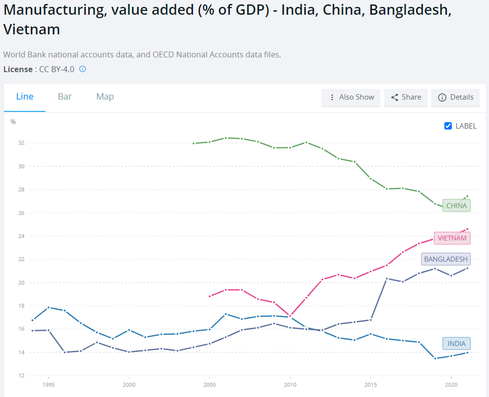
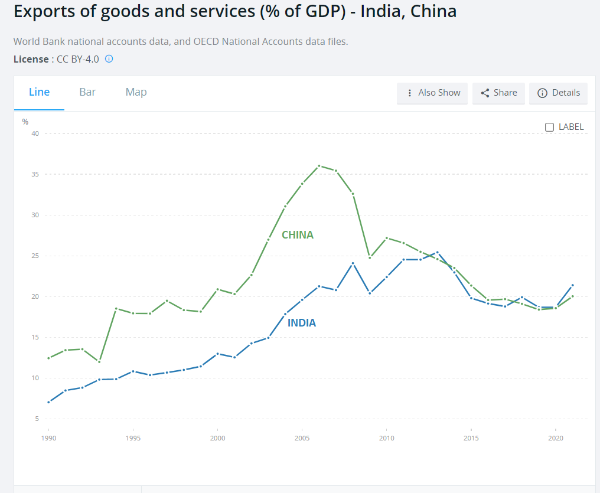

51 Climate Economics
51.1 A Blocking Neoclassical Framework
Brookes and Wagner
With its fixation on equilibrium thinking and an exclusive focus on market factors that can be precisely measured, the neoclassical orthodoxy in economics is fundamentally unequipped to deal with today’s biggest problems. Change within the discipline is underway, but it cannot come fast enough.
The economics discipline has failed to understand the climate crisis – let alone provide effective policy solutions for it – because most economists tend to divide problems into small, manageable pieces. Rational people, they are wont to say, think at the margin. What matters is not the average or totality of one’s actions but rather the very next step, weighed against the immediate alternatives.Such thinking is indeed rational for small discrete problems. Compartmentalization is necessary for managing competing demands on one’s time and attention. But marginal thinking is inadequate for an all-consuming problem touching every aspect of society.Economists also tend to equate rationality with precision. The discipline’s power over public discourse and policymaking lies in its implicit claim that those who cannot compute precise benefits and costs are somehow irrational. This allows economists – and their models – to ignore pervasive climate risks and uncertainties, including the possibility of climatic tipping points and societal responses to them. And when one considers economists’ fixation with equilibrium models, the mismatch between the climate challenge and the discipline’s current tools becomes too glaring to ignore.Yes, a return to equilibrium – getting “back to normal” – is an all-too-human preference. But it is precisely the opposite of what is needed – rapidly phasing out fossil fuels – to stabilize the world’s climate.These limitations are reflected in benefit-cost analyses of cutting emissions of carbon dioxide and other greenhouse gases. The traditional thinking suggests a go-slow path for cutting CO2. The logic seems compelling: the cost of damage caused by climate change, after all, is incurred in the future, while the costs of climate action occur today. The Nobel prize-winning verdict is that we should delay necessary investment in a low-carbon economy to avoid hurting the current high-carbon economy.
The very structure of academic economics all but guarantees that marginal thinking continues to dominate. The most effective way to introduce new ideas into the peer-reviewed academic literature is to follow something akin to an 80/20-rule: stick to the established script for the most part; but try to push the envelope by probing one dubious assumption at a time. Needless to say, this makes it extremely difficult to change the overall frame of reference, even when those who helped establish the standard view are looking well beyond it themselves.
Because equilibrium thinking underpins the traditional climate-economic models that were developed in the 1990s, these models assume that there are tradeoffs between climate action and economic growth. They imagine a world where the economy simply glides along a Panglossian path of progress. Climate policy might still be worthwhile, but only if we are willing to accept costs that will throw the economy off its chosen path.Against the backdrop of this traditional view, recent pronouncements by the International Monetary Fund and the International Energy Agency are nothing short of revolutionary. Both institutions have now concluded that ambitious climate action leads to higher growth and more jobs even in the near term.The logic is straightforward: climate policies create many more jobs in clean-energy sectors than are lost in fossil-fuel sectors, reminding us that investment is the flipside of cost. That is why the proposal for a $2 trillion infrastructure package in the United States could be expected to spur higher net economic activity and employment. Perhaps more surprising is the finding that carbon pricing alone appears to reduce emissions without hurting jobs or overall economic growth. The problem with carbon taxes or emissions trading is that real-world policies are not reducing emissions fast enough and therefore will need to be buttressed by regulation.
The framework of neoclassical economics is still blocking progress. The discipline is long overdue for its own tipping point toward new modes of thinking commensurate with the climate challenge.
Brookes and Wagner (2021) Economics needs a Climate Revolution
51.2 Long-term Economic effects of Climate Change
Kahn Abstract
We study the long-term impact of climate change on economic activity across countries, using a stochast
ic growth model where labour productivity is affected by country-specific climate variables—defined as
deviations of temperature and precipitation from their historical norms. Using a panel data set of 174
countries over the years 1960 to 2014, we find that per-capita real output growth is adversely affected
by persistent changes in the temperature above or below its historical norm, but we do not obtain any
statistically significant effects for changes in precipitation. Our counterfactual analysis suggests th
at a persistent increase in average global temperature by 0.04°C per year, in the absence of mitigation
policies, reduces world real GDP per capita by 7.22 percent by 2100. On the other hand, abiding by the
Paris Agreement, thereby limiting the temperature increase to 0.01°C per annum, reduces the loss subst
antially to 1.07 percent. These effects vary significantly across countries. We also provide supplement
ary evidence using data on a sample of 48 U.S. states between 1963 and 2016, and show that climate chan
ge has a long-lasting adverse impact on real output in various states and economic sectors, and on labo
r productivity and employment.
Kahn Memo
By using deviations of climate variables from their respective historical norms, while allowing for nonlinearity, we avoid the econometric pitfalls associated with the use of trended variables, such as temperature, in output growth equations. As it is well known, and is also documented in our paper, temperature has been trending upward strongly in almost all countries in the world, and its use as a regressor in a growth regression can lead to spurious estimates.
To measure the damage caused by climate change, economists have sought to quantify how aggregate economic growth is being a¤ected by rising temperatures and changes in rainfall patterns; see a recent survey by Dell et al. (2014)
The literature which attempts to quantify the e¤ects of climate change (temperature, pre- cipitation, storms, and other aspects of the weather) on economic performance (agricultural production, labour productivity, commodity prices, health, con‡ict, and economic growth) is relatively recent and mainly concerned with short-run e¤ects
Moreover, there are a number of grounds on which the econometric evidence of the e¤ects of climate change on growth may be questioned. Firstly, the literature relies primarily on the cross-sectional approach and as such does not take into account the time dimension of the data (i.e., assumes that the observed relationship across countries holds over time as well) and is also subject to the endogeneity (reverse causality) problem given the possible feedback e¤ects from changes in output growth onto the climate variable.
Secondly, the …xed e¤ects (FE) estimators used in more recent panel-data studies im- plicitly assume that climate variables are strictly exogenous, and thus rule out any reverse causality from economic growth to rising average temperatures.
n his computable general equilibrium work, Nordhaus accounts for the fact that faster economic activity increases the stock of greenhouse gas (GHG) emis- sions and thereby the average temperature. At the same time, rising average temperature could reduce real economic activity. This equilibrium approach has important implications for the econometric speci…cation of climate change–economic growth relationship. In fact, recent studies on climate science provide strong evidence that the main cause of contemporary global warming is the release of greenhouse gases to the atmosphere by human activities.
Consequently, when estimating the impact of climate change on economic growth, temperature (T it ) may not be considered as strictly exogenous, but merely weakly exogenous/predetermined to income growth; in other words economic growth in the past might have feedback e¤ects on future temperature. While it is well known that the FE estimator su¤ers from small-T bias in dynamic panels with N (the cross-section dimension) larger than T (the time series dimension). This bias exists regardless of whether the lags of the dependent variable are included or not, so long as one or more regressor is not strictly exogenous. In such cases, inference based on the standard FE estimator will be invalid and can result in large size distortions unless N=T ! 0, as N; T ! 1 jointly. Therefore, caution must be exercised when interpreting the results from studies that use the standard FE estimators in the climate change–economic growth literature given that N is often larger than T . Thirdly, econometric speci…cations of the climate change–macroeconomic relation are often written in terms of real GDP per capita growth and the level of temperature, T it , and in some cases also T it 2 ; see, for instance, Dell et al. (2012) and Burke et al. (2015). But if T it is trended, which is the case in almost all countries in the world (see Section 3.1), inclusion of T it in the regression will induce a quadratic trend in equilibrium log per capita output (or equivalently a linear trend in per capita output growth) which is not desirable and can bias the estimates of the growth–climate change equation. Finally, another major drawback of this literature is that the econometric speci…cations of the climate change–growth relation are generally not derived from or based on a theoretical growth model. Either an ad hoc approach is used, where real income growth is regressed on a number of arbitrarily–chosen variables, or a theoretical model is developed but not put to a rigorous empirical test.
We contribute to the climate change–economic growth literature along the following di- mensions. Firstly, we extend the stochastic single-country growth models of Merton (1975), Brock and Mirman (1972), and Binder and Pesaran (1999) to N countries sharing a common technology but di¤erent climate conditions. Our theoretical model postulates that labour productivity in each country is a¤ected by a common technological factor and country- specific climate variables, which we take to be average temperature, T it , and precipitation, P it , in addition to other country-specific idiosyncratic shocks. As long as T it and P it remain close to their respective historical norms (regarded as technologically neutral), they are not expected to a¤ect labour productivity. However, if climate variables deviate from their his- torical norms, the e¤ects on labour productivity could be positive or negative, depending on the region under consideration. For example, in a historically cold region, a rise in temper- ature above its historical norm might result in higher labour productivity, whilst for a dry region, a fall in precipitation below its historical norms is likely to have adverse e¤ects on labour productivity. 2 Secondly, contrary to much of the literature which is mainly concerned with short-term growth e¤ects, we explicitly model and test the long-run growth e¤ects of persistent increases in temperature. Thirdly, we use the half-panel Jackknife FE (HPJ-FE) estimator proposed in Chudik et al. (2018) to deal with the possible bias and size distortion of the commonly-used FE estimator (given that T it is weakly exogenous). When the time imension of the panel is moderate relative to N , the HPJ-FE estimator e¤ectively corrects the Nickel-type bias if regressors are weakly exogenous, and is robust to possible feedback e¤ects from aggregate economic activity to the climate variables.
Our results suggest that a persistent change in the climate has a long-term negative e¤ect on per capita GDP growth.
Our empirical findings apply equally to poor or rich, and hot or cold countries.
We show that an increase in average global temperature of 0:04 C per year— corresponding to the Repre- sentative Concentration Pathway (RCP) 8.5 scenario (see Figure 1), which assumes higher greenhouse gas emissions in the absence of mitigation policies— reduces world’s real GDP per capita by 7:22 percent by 2100. Limiting the increase to 0.01 C per annum, which corre- sponds to the December 2015 Paris Agreement, reduces the output loss substantially to 1:07 percent.
To put our results into perspective, the conclusions one might draw from most of the existing climate change–macroeconomy literature are the following: (i) when a poor (hot) country is 1 C warmer than usual, its income growth falls by 1–2 percentage points in the short- to medium-term; (ii) when a rich (temperate) country is 1 C warmer than usual, there is little impact on its economic activity; and (iii) the GDP e¤ect of increases in average temperatures (with or without adaptation and/or mitigation policies) is relatively small— a few percent decline in the level of GDP per capita over the next century (see, Figure 2). In contrast, our counterfactual estimates suggest that all regions (cold or hot, and rich or poor) would experience a relatively large fall in GDP per capita by 2100 in the absence of climate change policies (i.e., the RCP 8.5 scenario). However, the size of these income e¤ects varies across countries depending on the projected paths of temperatures.
Burke et al. (2015) consider an alternative panel specification that adds quadratic climate variables to the equation and detect: (i) non-linearity in the relationship; (ii) di¤erential impact on rich versus poor countries; and (iii) noisy medium-term growth e¤ects— their higher lag order (between 1 and 5) estimates reported in Supplementary Table S2, show that only 3 out of 18 estimates are statistically significant. Overall, apart from the econometric shortcomings of existing studies, robust evidence for the long-run growth e¤ects of climate change are nonexistent in the literature. However, our results show that an increase in temperature above its historical norm is associated with lower economic growth in the long run— suggesting that the welfare e¤ects of climate change are signi…cantly underestimated in the literature. Therefore, our findings call for a more forceful policy response to climate change.
Kahn (2019) LONG-TERM MACROECONOMIC EFFECTS OF CLIMATE CHANGE: A CROSS-COUNTRY ANALYSIS (pdf)
Dell Abstract
A rapidly growing body of research applies panel methods to examine how temperature, precipitation, and windstorms influence economic outcomes. These studies focus on changes in weather realizations over time within a given spatial area and demonstrate impacts on agricultural output, industrial output, labor productivity, energy demand, health, conflict, and economic growth, among other outcomes. By harnessing exogenous variation over time within a given spatial unit, these studies help credibly identify (i) the breadth of channels linking weather and the economy, (ii) heterogeneous treatment effects across different types of locations, and (iii) nonlinear effects of weather variables. This paper reviews the new literature with two purposes. First, we summarize recent work, providing a guide to its methodologies, datasets, and findings. Second, we consider applications of the new literature, including insights for the “damage function” within models that seek to assess the potential economic effects of future climate change.
Dell Memo
The difficulty in identifying causative effects from cross-sectional evidence has posed substantial and long-standing challenges for understanding the historical, contemporary, and future economic consequences of climate and climate change.
In the last few years, there has been a wave of new empirical research that takes a different approach. These new studies use panel methodologies, exploiting high-frequency (e.g., year-to-year) changes in temperature, precipitation, and other climatic variables to identify these variables’ economic effects. As nomenclature, this new literature uses “weather variation” to describe shorter-run temporal variation. The word climate is reserved for the distribution of outcomes, which may be summarized by averages over several decades, while weather describes a particular realization from that distribution and can provide substantial variability.
The primary advantage of the new lit- erature is identification. By exploiting exogenous variation in weather outcomes over time within a given spatial area, these methods can causatively identify effects of temperature, precipitation, and windstorm variation on numerous outcomes, including agricultural output, energy demand, labor productivity, mortality, industrial output, exports, conflict, migration, and economic growth. This literature has thus provided a host of new results about the ways in which the realizations of temperature, precipita- tion, storms, and other aspects of the weather affect the economy.
This literature has important implications for the “damage function” in climate change models. The opportunity here is to bring causative identification to the damage functions, elucidating the set of important climate–economy channels and their functional forms. The challenge lies in bridging from the evidentiary basis of short-run weather effects to thinking about longer-run effects of changes in the distribution of weather, which may be either larger (e.g., due to intensification effects) or smaller (e.g., due to adaptation) than the short-run impacts. While certain climate change aspects are difficult to assess, we examine a number of empirical methodologies that can help bridge toward longer-run effects while maintaining careful identification.
climate studies often seek to estimate the contemporaneous effect of temperature on economic activity for the purpose of assessing the potential impacts of forecasted temperature changes over the next several decades. The cross-sectional relationship, which represents a very long-run equilibrium, may incorporate processes that are too slow to accurately inform the time scale of interest, or it may include historical processes (such as colonialism) that will not repeat themselves in modern times.
To the extent that one is interested in iso- lating the impact of climatic variables such as temperature—apart from the many other factors that they are correlated with and have influenced over the very long run—a different approach is to use longitudinal data to investigate the effects of weather shocks. This approach, which is the focus of this review, has emerged in recent years and emphasizes variation over time within a given spatial entity.
The literature uses a nomenclature of “weather varia- tion” for shorter-run temporal variation, as opposed to “climate variation,” where the word climate is used to describe the distribution of outcomes while weather refers to a particular realization from that distribution.
A related issue is the inclusion of lags of the dependent variable, y it . Including these lags biases coefficient estimates in short panel models, 4 yet excluding the lagged dependent variable may also bias the estimates if it is an important part of the data-generating pro- cess. While what comprises a “short” panel will depend on the data-generating process, Monte Carlo experiments suggest that the bias can be nonnegligible with panel lengths of T = 10 or even T = 15.
A further implementation question involves the appropriate functional form for the weather variables. One common approach measures C it in “levels” (e.g., degrees Celsius for temperature or millime- ters for precipitation). In the panel set up, the identification thus comes from devia- tions in levels from the mean. 7 Another common approach, aimed at revealing nonlinear effects, considers the frequencies at which the weather realizations fall into different bins.
A different approach emphasizes “anom- alies,” where the weather variable is cal- culated as its level difference from the within-spatial-area mean and divided by the within-spatial-area standard deviation. The first part—the difference in mean—is already captured in a broad sense by the panel model. The second part—scaling by the standard deviation—takes a particular view of the underlying climate–economy model where level changes matter not in an absolute sense but in proportion to an area’s usual variation.
Alternatively, outcome-specific approaches may be preferred where existing research provides guidance. For example, knowledge of biological processes in agriculture sug- gest refined temperature measures such as “degree-days” for crop growth, possibly with crop-specific thresholds.
s a general rule, imposing specific func- tional forms on the data, such as crop degree- days, is useful to the extent that one has confidence in the specific model of the pro- cess that translates weather to economic out- comes. The more agnostic about the model, the more general the researcher would like to be about the functional form.
There are two notable interpretative issues with the panel models that, while not calling into question the experimental validity of the regression design, do raise questions about their external validity for processes such as global warming. One interpretive challenge is whether and how the effects of medium- or long-run changes in climatic variables will differ from the effects of short-run fluctuations. A second issue is that panel models, in focusing on idiosyncratic local variation, also neutral- ize broader variation that may be of poten- tial interest, including general equilibrium effects that spill across spatial borders or are global in nature, like effects on commodity prices.
Data
There are currently four principal types of weather data: ground station data, gridded data, satellite data, and reanalysis data. The most basic type of data are from ground stations, which typically directly observe tem- perature, precipitation, and other weather variables such as wind speed and direction, humidity, and barometric pressure. Gridded data provide more complete coverage by interpolating station information over a grid. Satellite data use satellite-based readings to infer various weather variables. Finally, reanalysis data combine information from ground stations, satellites, weather balloons, and other inputs with a climate model to estimate weather variables across a grid.
Different interpolation schemes can produce different estimates, particularly in short time periods and particularly for precipitation. Precipitation has a far greater spatial variation than temperature, especially in rugged areas, and thus is more difficult to interpolate.
While satellite data can provide important weather information for areas with a limited ground network, satellite data are not necessarily a panacea. Satellites were launched relatively recently, so their data does not extend back nearly as far historically as other datasets. Furthermore, an individual ground station is more accurate than the satellite data for that particular location, in part because satellites do not directly measure temperature or precipitation, but rather make inferences from electromag- netic reflectivity in various wavelength bands. Lastly, a s atellite-based series is not drawn from a single satellite, but rather from a series of satellites. Sensors have changed subtly over the years and, within a particular satellite, corrections are needed due to subtle changes in the satellite’s orbit over time and other factors.
The key difference between reanalysis and gridded data is that, rather than use a statistical procedure to interpolate between observations, a climate model is used.
One approach is to aggregate spatially; that is, to overlay administrative or other boundaries with the gridded weather dataset and take a simple area-weighted average of weather variables within the administrative unit, which can be done easily using GIS soft- ware. However, this approach will lead large areas with little economic activity and sparse populations (such as deserts, rain forests, or the Arctic) to dominate the weather aver- ages of large spatial units such as the United States, Russia, and Brazil. A second approach is, therefore, to aggregate using a fixed set of population weights, so that the relevant concept is the average weather experienced by a person in the administrative area, not the average weather experienced by a place.
Overall, the studies discussed in this sec- tion document that temperature, precipi- tation, and extreme weather events exert economically meaningful and statistically significant influences on a variety of eco- nomic outcomes. These impacts illustrate the multifaceted nature of the weather– economy relationship, with numerous appli- cations for understanding historical, present, and future economic outcomes and possible policy responses. For example, the effects of weather variables on mortality rates, labor productivity, energy demand, and agricul- tural output can inform investments and policy design around public health, air-con- ditioning, energy infrastructure, and agricul- tural technologies. Moreover, these studies can help inform classic issues of economic development, especially the role of geo- graphic features in influencing development paths. Finally, these analyses may inform estimates of the economic costs of future climatic change. The possibility of future climatic change has been a primary motive for the recent, rapid growth of this literature.
Results
Cross-country empirical analyses show a strong negative relationship between hot cli- mates and income per capita.
Panel studies exploit the exogeneity of cross-time weather variation, allowing for causative identification.
In a world sample from 1950 to 2003, Dell, Jones, and Olken (2012) examine how annual variation in temperature and precipitation affects per capita income. They show that being 1°C warmer in a given year reduces per capita income by 1.4 percent, but only in poor countries. Moreover, estimating a model with lags of temperature, they find that this large effect is not reversed once the temperature shock is over, suggesting that temperature is affecting growth rates, not just income levels. 22 Growth effects, which compound over time, have potentially first-order consequences for the scale of eco- nomic damages over the longer run, greatly exceeding level effects on income, and are thus an important area for further modeling and research.
While the production function is often calibrated through the use of experimental data, it has been criticized for not realistically modeling real farmer behavior in real settings. For example, many studies do not allow farmers to adopt new crops when the temperature input into the production function changes, nor do they allow farmers to switch their cultivated land to livestock or nonfarm use. To address these concerns, Mendelsohn, Nordhaus, and Shaw (1994) developed a second approach, which they called the Ricardian approach, that instead used cross-sectional regressions with land values to recover the net impacts of climate on agri- cultural productivity. By analyzing farm land prices as a function of climate and a host of other characteristics, they estimated that the impacts of climate change would be much smaller than those estimated by the production function approach and might even be positive.
In estimating a cross-sectional relationship like equation (2) for irrigated areas, which transport water from other locations, the localized climate is not the key determinant of production.
Understanding nonlinearities becomes important when con- sidering the impact of global climate change because a right-shift in the distribution of average temperature causes a disproportionate increase in the number of very hot days.
The possibility of adaptation was a major argument for the approach of Mendelsohn, Nordhaus, and Shaw (1994), since presumably, changes in land values would incorporate future adaptation effects.
Modern lab experiments have investi- gated the impact of temperature on pro- ductivity. Subjects are typically randomly assigned to rooms of varying temperatures and asked to perform cognitive and physical tasks. Examples of tasks shown to respond adversely to hot temperatures in laboratory settings include estimation of time, vigilance, and higher cognitive functions, such as men- tal arithmetic and simulated flight.
Observational and experimental studies also show a strong relationship between tem- perature and the productivity of factory, call center, and office workers, as well as students. Within the range of temperatures from 22–29oC, each additional oC is associated with a reduc- tion of about 1.8 percent in labor produc- tivity. The relationship is complex and find that other aspects (e.g., humidity, amount of outdoor air, carbon dioxide levels) have complex inter- actions with temperature. A meta-analysis of these studies concludes that increasing temperature from 23 to 30oC reduces productivity by about 9 percent.
Industrial output using aggregated data center approximately on a 2 percent output loss per 1°C.
Large effects of windstorms on industrial production. Effects of precipitation on industrial output appear slight, although only one study looks at extremely heavy precipitation and in that case finds modest negative effects.
Energy
The literature has looked extensively at how climatic variables, in particular temper- ature, influence energy consumption. This relationship, which has received renewed attention in light of potential climate change, has long been important for the design of electricity systems, where demand varies with climate and weather. Understanding temperature effects matters for the energy consequences per se and for potential feed- back loops, incorporated into some climatic models, where energy demand influences greenhouse gas emissions, which in turn affects future energy demand.
A clear U-shape relationship between energy demand and temperature, with an extra day below 10oF or above 90oF raising annual energy demand by 0.3–0.4 percent.
These panel-data papers, in using tempera- ture bins, depart from a prior practice of using “heating degree days” (HDD) and “cool- ing degree days” (CDD), which count the number of days below and above a threshold temperature, with each day weighted by its temperature difference from the threshold. This degree-days approach misses the con- vexity found in the nonparametric approach, where extreme temperatures provoke much stronger energy demand increases. The con- vexity of the U-shape appears important both in getting the energy demand estimation cor- rect and in light of climate change models, which show an increasing number of very hot days. Partly for this reason, Deschênes and Greenstone (2011) and Auffhammer and Aroonruengsawat (2011) find that the net effect of warming over the twenty-first century is likely to increase energy demand substantially, ceteris paribus, with these studies estimating 11 percent and 3 percent demand increases respectively.
Trade and Innovation
Trade can, in principle, dampen or exacerbate local effects of productivity losses. Another potentially first-order adaptation mechanism is innovation.
The unusual identification opportunity provided by weather shocks has allowed a rigorous analysis of weather–economy link- ages, and implications for breadth, hetero- geneity, and functional forms. While much work remains in developing a detailed under- standing of the underlying mechanisms, especially for macroeconomic and politi- cal economy outcomes, the new literature shows that weather variation has substantive effects in contemporary periods. This begins to suggest policy targets, whether the goal is preventing substantial economic damages or protecting public health and security.
From short to long run: Econometrics
While tem- perature changes over the next thirty years will plausibly be within this range (recall the IPCC middle estimates were between 1.8–3.1oC by 2100), the ninety-fifth percentile estimate is warming of 7oC by 2100. If the impacts of climatic variables are linear throughout this range, then extrapolation is not an issue per se. However, if there are nonlinearities that are different from those operating within historical experience, one cannot directly extrapolate from equation (3) to climate scenarios far outside this range.
This issue suggests a limited capacity for panel models to provide quantitative estimates of damages from extreme warming.
hese issues highlight that, even though panel models of the form of equation (3) correctly identify the causal effect of weather shocks on contemporaneous economic out- comes, they may not estimate the structural equation of interest for understanding the likely effects of future global climate change. Moreover, even leaving aside the potential of catastrophic climate scenarios, such as rapid sea-level rise or the release of methane from melting permafrost that could greatly increase global temperature, the panel esti- mates are neither obviously an upper bound nor a lower bound for the effect of climate change. If the adaptation force dominates, then the effects of weather shocks will tend to be larger than the effects of climate change; if the intensification force dominates, then the effects of weather shocks will tend to be smaller than the effects of climate change.
Longer-difference estimates are perhaps the closest empirical analogue to the structural equation of interest for climate change.
To the extent that adaptation requires forward-looking investments, adap- tation choices will depend not only on the underlying damage functions and adaptation possibilities, but also on agents’ expectations. Responses will depend on whether agents both were aware of the change in average temperature, and whether they perceived it to be a permanent change or just an accumulation of idiosyncratic shocks.
The challenge is that economies are chang- ing and the longer the time difference taken in (8), the further back in time the analysis goes (by necessity), and the further removed from present-day economic conditions the analysis becomes. To the extent that differ- ent economies presented very different standards of living, technologies, and institutions through the twentieth century, one may still make headway by examining historical heterogeneous treatment effects along various dimensions of economic development. On the other hand, the future presumably prom- ises new technologies and other features that may pull economies outside the range of historical experiences, calling for caution in drawing sharp conclusions from increasingly historical studies.
Long-run studies illustrate that factor reallocation may be an important mechanism.
IAMs
Our focus is on the damage function, the component of IAMs that specifies how increased temperatures affect economic activity.
IAMs used for economic policy analysis typi- cally include four broad components: 1) a model projecting the path for greenhouse gas (GHG) emissions; 2) a model mapping GHG emissions into climatic change; 3) a damage function that calculates the economic costs of climatic change, and; 4) a social welfare function for aggregating damages over time and potentially across space.
All IAMs must make a wide variety of modeling choices, with large uncertainties remaining across each component.
The possibility of positive feedback loops implies that mod- eled climate change predictions are right- skewed; in other words, there are “fat tail” probabilities for massive climatic change in the next century.
IAMs must specify a social welfare function that discounts the future path of consumption.
The concavity of the utility function. This property influences not only how one weighs future versus current generations, but also how one weighs rich versus poor economies at a single point in time.
Different IAMs model the climate-dam- age function in somewhat different ways. For example, the DICE/RICE models use a Cobb–Douglas production function with capital and labor as inputs, multi- plied by TFP, which grows at a constant, exogenously specified rate. Output is then reduced by the climate-damage function. For example, in the DICE model, the damage function is
\[D(T) = frac{1}{1+Pi_1 T + Pi-2 T^2}\]
DICE calibrates the π parameters to match cross-sectional estimates of climate damages reviewed in Tol (2009).
In the FUND model, rather than spec- ify an aggregate damage function directly, climate damages are calculated at the region-by-sector level and aggregated up; that is, FUND posits separate models for agriculture, forestry, energy consumption, and health (deaths from infectious, cardio- vascular, and respiratory disease), while also considering water resources, extreme storm damage, sea level rise, and the value for eco- systems, with potentially separate regional parameters for each of these models.
An important challenge with the current damage functions is that, for the most part, they do not incorporate the type of rigor- ous empirical evidence on climate damages reviewed here. In a recent review of IAMs, when discussing the calibration of the D(T) function, Pindyck (2013) writes “the choice of values for these parameters is essentially guesswork. The usual approach is to select values such that [D(T)] for T in the range of 2°C to 4°C is consistent with common wis- dom regarding the damages that are likely to occur for small to moderate increases in temperature. . . . The bottom line here is that the damage functions used in most IAMs are completely made up, with no theoretical or empirical foundation.”
The implications of the econometric evidence discussed here can be thought of in two respects: how we model and calibrate the climate-damage function at a point in time, and how the climate-damage function evolves over time.
A key modeling choice for the dam- age function is whether climate affects the level of output or the growth path of output. The main IAMs assume that the impact of climate is on the level of output only with the growth of total-factor productivity continuing exogenously. Because growth effects, even small ones, will ultimately dominate even large-level effects, ruling out growth effects substantially limits the possible economic damages these models allow.
An alternative way of specifying the dam- age function is to allow climate to affect the long-run growth rate directly. Understanding the functional form through which climate affects economic output is critical. While it is hard to know definitively the correct functional form for the loss func- tion, even small impacts on productivity growth could, over time, swamp effects on the level of output.
Building IAMs is a challenging exercise with enormous uncertainty.
We are optimistic that the damage function can be substantially informed by the recent wave of new empirical research, which has begun to provide key insights.
Integrating across the many studies reviewed, several broad themes emerge.
First, there is a wide range of channels through which weather shocks affect eco- nomic outcomes. Shocks, especially temper- ature, affect agricultural output, industrial output, energy demand, labor productivity, health, conflict, political stability, and eco- nomic growth. Labor productivity effects alone may suggest potentially economywide mechanisms. Moreover, the magnitudes of the effects are often substantive. An inter- esting linkage appears across studies of labor productivity, industrial output, and economic growth, where estimates converge around a 1–2 percent loss per 1°C in poor countries.
Second, the panel studies provide an emerging set of key insights about functional forms. Effects are often not simple linear functions independent of context. High sensitivity to extreme temperatures, but little or no sensitivity to temperature changes within moderate temperature ranges. International and internal trade effects, including studies of how integrated mar- kets both mute and transmit shocks.
Panel methodologies can also study medium-run and longer-run changes directly. Keeping in mind that countries have warmed substan- tially on average in the last several decades, with substantial variance within and across countries, there is ample capacity to study medium-run changes. The recent warm- ing rate is also very similar to that predicted by many climate models through at least the middle of the current century. Noting that climate change is not about a perma- nent climate shock, but rather about a sto- chastic warming process along an upward trend, recent historical experience, which has occurred on such a stochastic warming trajectory, provides a highly relevant set- ting to understand warming effects.
Dell (2014) What Do We Learn from the Weather? The New Climate–Economy Literature (pdf)
51.3 Carbon Tax
Roberts
Carbon taxes are an almost perfectly terrible policy from the perspective of political economy. They make costs visible to everyone, while the benefits are diffuse and indirect. They create many enemies, but have almost no support outside the climate movement itself.
51.3.1 Fee and Dividend
More to the point, because there have been so few fee-and-dividend policies implemented in the real world, there’s been very little field testing of the public’s actual response to it.
A new paper in the journal Nature Climate Change by political scientists Matto Mildenberger look at public opinion in the places where carbon fee-and-dividend policies have been implemented.
It turns out there are only two.
Switzerland established a rebate program in 2008. The carbon tax reached 96 Swiss francs (about $105) per tonne in 2018; about two-thirds of the revenue is rebated on a per-capita basis, with everyone (including children) receiving an equal share.
Canada established a rebate program in 2019 as part of its national carbon-pricing strategy. So far, the scheme covers four of 10 provinces, with more than half of the national population. The price was initially set at 20 Canadian dollars (about $16 U.S.) a tonne, rising to CA$50 by 2022; recently the government released a new schedule that would target CA$170 by 2030.
The refund, or Climate Action Incentive Payment, is based on the number of adults and children in the household, with a 10 percent boost for rural households. It is highly progressive; 80 percent of households get more back than they pay.
The Nature Climate Change paper looks at public opinion in both countries. In Canada, it draws on a longitudinal study, which surveyed the same residents — “from five provinces, two subject to the federal carbon tax (Saskatchewan and Ontario), one with provincial emissions trading (Quebec), and two with provincial carbon taxes (British Columbia and Alberta)” — five times from February 2019 through May 2020, during which time the scheme was proposed, debated, passed, and implemented.
In Switzerland, the paper draws on a survey of 1,050 Swiss residents in December 2019. Only 12 percent of Swiss respondents know that part of the carbon revenue is refunded; 85 percent did not know they’d gotten a refund at all. Canadians remain confused and in many cases ignorant about carbon refunds.
You might think, well, the problem is how these countries administer their refunds. In Canada, it’s a line on your tax return. In Switzerland, it’s a discount on your health insurance premiums. Both are clearly marked, but lots of people don’t exactly scrutinize those documents and keep track of every line item.
In short, the available evidence suggests that carbon refunds don’t do much to reshape public opinion on carbon taxes, even among voters with accurate information about the refund they receive.
Roberts (2022) Do dividends make carbon taxes more popular? Apparently not
51.4 Finnish Carbon Tax
Mideksa Abstract
Finland introduced the planet’s first carbon tax in 1990 to experiment with, to most economists, the best policy to reverse carbon emissions. I estimate the causal effect of taxing carbon on Finnish emissions using the Synthetic Control Approach (Abadie, 2021). The results suggest that taxing carbon reduces emissions by big margins. Finnish emissions are 16% lower in 1995, 25% lower in 2000, and 30% lower in 2004 than emissions in the counterfactual consistent with carbon taxes whose value increasing by 20 fold in 1990 - 2005. The estimates suggest that the carbon tax’s abatement elasticity is about 9%.
Mideksa Memo
Despite the conceptual foundation behind using a carbon tax to reverse carbon emissions being strong, its empirical foundation remains arguably weaker.
The supporting evidence for the effectiveness of taxing carbon is missing, first, because few countries have taxed carbon: even fewer empirical studies of the causal effect on emissions.
Besides, in the countries that have taxed carbon, the policy-induced data generating process has been too complex to lend itself to causal identification.
Syntetic Control Approach
What is the causal effect on CO 2 emissions of the Finnish taxes on carbon? One can think about this question and identify the causal effect by conducting a randomized control trial: some regions, chosen randomly, tax carbon while the remaining regions serve as a control group. Yet, countries tax carbon in all regions let alone with randomization. One thus needs a second-best alternative to randomization: the synthetic control approach to estimate the causal effect of the Finnish carbon tax since 1990.
The synthetic control method adopts a data-driven approach in choosing the best comparison unit and allows falsification tests in assessing its sensitivity
In estimating the effect of the Finnish carbon tax using synthetic control, I focus on emissions from the transportation sector for the following reasons. First, there is a problem of ruined-control in the countries without a carbon tax. The problem arises when Finland imposes the carbon tax, some inputs can be imported from (or exported to) other countries. In other words, the aggregate emissions in nations without a carbon tax could be affected by the Finnish carbon tax when such countries trade with Finland. This is a concrete problem, for example, when it comes to per capita emissions, which is a contaminated measure for a small open economy like Finland. However, transportation services are internationally non-tradable, the ruined-control effect due to international trade is limited.
The structure of energy production and use in transport activities is similar across countries. This eases the task of constructing a valid comparison unit to Finland from the set of other countries.
I focus on the transport sector due to the availability of data for predictors that allow comparability across countries.
The estimated gap between the actual and the counterfactual emissions implies that the carbon tax reduces emissions considerably. Finnish emissions are 16% lower in 1995, 25% lower in 2000, and 31% lower in 2005 relative to the counterfactual. Rising impact over time goes in line with the increasing intensity of the CO 2 tax per ton of CO 2 over time (i.e., increased by 20 fold in the treatment period). The estimated emissions reductions came from stabilizing the Finnish emissions at the 1990 level relative to sharply rising emissions in the countries lacking a carbon tax. The estimated emissions reductions are consistent with the decline in Finnish gasoline, and diesel, consumption after 1990. Moreover, Finnish passenger transport activities and the number of vehicles have decreased to a new trend after 1990.
I estimate the carbon tax elasticity of emissions reductions directly by using the real carbon tax data and its estimated impact. The geometric mean of the annual carbon tax elasticity of emissions reduction values is −9%.
The countries in the donor pool adopt arguably similar transportation technologies as Finland. Limiting the donor pool to countries whose emissions are driven by a similar structural process as that of Finland serves as a reasonable potential comparison unit.
The counterfactual trajectory of emissions emerges as a convex combination of emissions of six countries. These countries, with corresponding weight in a bracket, are the United Kingdom (43.20%), Turkey (18.40%), New Zealand (15.90%), Luxembourg (10.20%), Switzerland (9.40%), and the United States of America (2.90%).
A useful parameter to summarize the effect of carbon tax is elasticity. Since the number of observations is very small, the OLS based estimation of elasticity is sensitive and its application is conceptually questionable.
The initial values of annual elasticity are higher consistent with abundant possibilities of low-hanging abatement options. While the values of annual elasticity oscillate, the arithmetic and geometric mean values are 0.099 and 0.086 respectively.
eople expect taxes to be permanent and long term while variations in fuel prices could be short-term. In response, people adjust both on the intensive and the extensive margins when facing carbon taxes whereas mostly on intensive margins for temporary fluctuations in gasoline prices. Third, carbon taxes carry a signal from a society that urge for reducing carbon emissions, a signal absent in temporary variations in gasoline prices.
The identifying assumption underlying the synthetic control approach is that emissions in synthetic Finland serve as a valid counterfactual. For example, if countries price carbon indirectly through energy and fuel taxes, the identifying assumption calls for a similar evolution of such variables both in Finland and synthetic Finland.
To take into account implicit carbon prices, I exclude countries that have raised their fuels taxes from the donor pool.
I perform a back-dating test by introducing hypothetical carbon taxes in 1986, 1987, and 1988. Besides, I drop one predictor at a time to re-estimate emissions in synthetic Finland.
While one recognizes that the Finnish recession in 1990 – 1993 could have played some role in reducing emissions, it is unclear if the recession is the central explanation for the observed emissions reductions in 1993 – 2005. Similarly, the high elasticity estimates may reflect the low-hanging fruits.
The case for a carbon tax, when compared with auctioned quotas, is far from unanimous. The reservation goes back, at least, to Buchanan (1969, p. 175) – who aimed at contributing the project of “dismantling of the Pigovian tradition in applied economics, defined here as the emphasis on internalizing externalities through the imposition of corrective taxes and subsidies.”
The current concerns include the difficulty of meeting a given emissions target (Harris and Pizer, 2020) and the ramifications for risk externality (Mideksa, 2020), the political difficulty of imposing a tax and changing it over time (Slemord and Bakija, 2017), the challenge of enforcing a tax and avoiding evasion in countries with a weak fiscal capacity (Acemoglu, 2005; Besley and Persson, 2009), the ease for allowing exceptions and loopholes and for undermining a tax through subsidies to complementary inputs, and other factors covered in Sterner and Coria (2012) and Stavins (2020). These factors, in addition to carbon leakage, can explain why there was no break in the trend of Finnish industrial CO 2 emissions around 1990.
Focusing on political economy considerations, Brooks and Keohane (2020, p. 20) explain the point as follows. “In general, the environmental community is focused on ensuring emissions reductions, while the regulated industry is focused on limiting costs. The former’s strong preference for such environmental certainty helps to explain why existing market-based climate policies are overwhelmingly quantity-based; the latter’s insistence on some degree of cost certainty helps to explain why these policies generally also include price containment mechanisms.” 10 Emissions target can be unmet due to the uncertainty from business cycles or MIT shocks like pandemics. Other things being the same, carbon taxes deliver higher abatements during recessions and lower abatements during booms, relative to auctioned quotas.
Since economies tend to have more periods of a boom than periods of a recession (e.g., see Figure 2 in Rebelo, 2005), some stakeholders (e.g., environmentalists that Brooks and Keohane (2020) refer to) worry that taxes can fail to meet emissions targets. Nevertheless, the Finnish experience in 1990 – 2005 suggests something else: a well-crafted carbon tax induces meaningful emissions reductions both in booms and recessions in the early phases of decarbonization. Thus, the Finnish experience does not support the idea that carbon taxes are excuses to continue emitting more.
51.5 Instrument Choice Delays
Roberts
The capture of the climate policy debate by carbon-price-obsessed economists in the late 20th century helped send national and international climate policy down a multi-decade cul-de-sac in which very little was accomplished and much precious time was wasted.
Roberts (2021) A rant about economist pundits, and other things, but mostly economist pundits
Boyd
Using the case of emissions trading, this Article investigates how the instrument choice debate has impoverished our conception of government and limited our capacity to respond to the climate crisis. The central claim is that the overly abstract theory of instrument choice that has underwritten widespread enthusiasm for emissions trading and other forms of carbon pricing over the last three decades has led to a sharply diminished view of public engagement and government problem solving.
Boyd (2021) The Poverty of Theory: Public Problems, Instrument Choice, and the Climate Emergency
51.6 SSPs
Buhaug Abstract
The recently developed Shared Socioeconomic Pathways (SSPs) have enabled researchers to explore coupled human–nature dynamics in new and more complex ways. Despite their wide applicability and unquestionable advantage over earlier scenarios, the utility of the SSPs for conducting societal impact assessments is impaired by shortcomings in the underlying economic growth projections. In particular, the assumed economic convergence and absence of major growth disruptions break with historical growth trajectories in the developing world. The consequence is that the SSP portfolio becomes too narrow, with an overly optimistic lower band of growth projections. This is not a trivial concern, since resulting impact assessments are likely to underestimate the full human and material costs of climate change, especially for the poorest and most vulnerable societies. In response, we propose that future quantifications of the SSPs should incorporate the likelihood of growth disruptions, informed by scenarios of the relevant political contexts that historically have been important in curbing growth.
How will climate change shape societies in coming decades, and what steps could be taken to avoid the gravest consequences? The recently developed Shared Socioeconomic Pathways (SSP) framework, which plays an integral role in the ongoing Intergovernmental Panel on Climate Change (IPCC) Sixth Assessment cycle, constitutes the most comprehensive attempt to date to model societal development consistent with different climate change scenarios (O’Neill et al. 2014; Riahi et al. 2017). The SSPs span a range of alternative futures, determined by assumptions about challenges to climate change mitigation and adaptation. Four pathways (SSP1, SSP3–SSP5) capture the four possible combinations of low versus high barriers to adaptation and mitigation, whereas the fifth (SSP2) represents a middle-of-the-road pathway. Central drivers of these challenges include changes in demographic, economic, technological, social, political, and environmental factors.
The SSPs serve two key functions: to provide “a basis for integrated scenarios of emissions and land use” and to facilitate “climate impact, adaptation and vulnerability analyses” (O’Neill et al. 2017, 169). There is some tension between these functions, since the former is determined mostly by the development trajectories of large economies and major greenhouse gas (GHG) emitters, whereas the latter is much more sensitive to future development in low-income countries and the world’s poor. In other words, there is little overlap between the countries that contribute the most to anthropogenic climate change and those that are the most vulnerable to its impacts (Althor et al. 2016). Presently, the SSP framework appears better suited to fulfilling the first task than the second.
In this research note, we show that existing quantifications of the SSPs, despite their wide applicability and unquestionable advantage over earlier scenario exercises, have clear limitations for researchers seeking to conduct societal adaptation and impact assessments because of shortcomings in the economic growth models underlying the SSPs. In particular, the assumption of growth convergence, whereby poorer countries gradually catch up with wealthy economies as long as educational attainment improves, and the related assumption of a future without major growth disruptions break with historical development trajectories. The result is an overly narrow and optimistic range of projected development outcomes. In response, we encourage revising or expanding the SSPs to incorporate growth projections that are sensitive to the underlying political and security contexts. Assumptions about such conditions are already embedded in the narratives that accompany the quantified SSPs (O’Neill et al. 2014, 2017), but presently, they exist in isolation from the growth projections. By bringing the political context explicitly into the quantitative scenarios, the SSP modeling community would help the IPCC get one step closer to achieving its objective: “to provide governments at all levels with scientific information that they can use to develop climate policies.”
Buhaug Memo
The quantification of the SSPs consists of end-of-century population and urbanization projections, including changes in fertility and education ( Jiang and O’Neill 2017; KC and Lutz 2017), as well as three alternative projections of growth in gross domestic product (GDP), developed by modeling teams at the Organisation for Economic Co-operation and Development (OECD) (Dellink et al. 2017), the International Institute for Applied Systems Analysis (IIASA) (Cuaresma 2017), and the Potsdam Institute for Climate Impact Re- search (PIK) (Leimbach et al. 2017), respectively. Governance and security de- velopments are not part of the quantitative scenarios. Instead, aggregate descriptions of the regional and global political contexts are embedded in the qualitative storylines that accompany the SSPs.
All three SSP teams modeling future economic growth adopted the aug- mented Solow growth model. A central feature of the Solow model is the convergence mechanism: that development is associated with diminishing marginal returns on invest- ments, such that it is cheaper and more viable for less advanced societies to absorb inventions from the technology frontier than for advanced societies to develop new technology. The augmented model assumes that the rate of convergence is conditional on human capital. If the convergence mechanism is a major driving factor of growth, we should observe a steady narrowing of the income gap between developed and developing countries as time pro- gresses, assuming that the populations in developing countries become increas- ingly educated. In the real world, economic convergence has been much less pronounced, despite significant educational improvements in poor countries.
Despite the historical prevalence of growth disruptions and a good scientific un- derstanding of important structural drivers, the economic growth models in the SSP portfolio abstain from incorporating negative shocks. For most countries, most of the time, this is not a problem, and the augmented Solow model has been shown to perform well in predicting welfare growth for the countries that account for the vast majority of global GDP (Mankiw et al. 1992). For the same reason, the SSPs are well suited to evaluating implications of alternative societal development trajectories for global GHG emissions and climate change mitiga- tion challenges. However, such models tend to return overly optimistic projec- tions in the long term, especially for countries at greater risk of experiencing growth disruptions.
Known barriers to growth, such as resource dependence, war, and lack of good governance structures—all of which are part of the SSP narratives are unaccounted for in the GDP projections. The consequence is that the range of futures provided through the quanti- fied SSP framework becomes too narrow and covers too small of an area of the conceivable probability space due to an overly optimistic lower band of growth projections. Of particular concern is the fact that the coun- tries for which the GDP projections will fit the least well (i.e., developing countries with a history of recurring growth disruptions) are the very same countries where vulnerability to climate change is considered the highest and for whom sound adaptation and impact assessments may be most in demand. [Attempts to use the SSPs] are thus at risk of overestimating future production and security improvements and underestimating the relative cost of choosing a development pathway akin to regional rivalry (SSP3) or inequality (SSP4) over sustainable development (SSP1). Although modelers need high- growth scenarios, and there are reasons to remain optimistic about long-term development in many of today’s poor countries, sound and comprehensive impact assessments also require projections that are at least as pessimistic as the recent past.
Buhaug (2019) On Growth Projections in the Shared Socioeconomic Pathways (pdf)
51.7 Guard Rail Economics
Stern
We risk loss of life in the hundreds of millions or billions; because we do not know what the “carrying capacity” of a world of 4 or 5 o C might be. It could be much lower than the 9-10 billion or so expected towards the end of the century. It is hard to understand or put numbers on the potential devastation and agony around the process of loss of life that could be involved. It is difficult, in particular, to argue that an expected utility approach captures the issues at stake in a plausible way. In my view, a direct risk-assessment looking across possible consequences and a guard-rail approach is more thoughtful, reasoned, broad-ranging and robust. And it is clearly seen as a reasonable and rational approach by the body-politic.
A new form of Growth The necessary rapid change across the whole system, just described, can be a story of growth, indeed the only sustainable story of growth. In the shorter term, the necessary investments can boost demand in a world where planned savings exceed planned investments (with sluggish demand and low real interest rates). In the short and medium term it is full of innovation, investment, discovery, and new ways of doing things. It can be more efficient; and much cleaner. It can create cities where we can move and breathe, and ecosystems which are robust and fruitful. It is potentially a very attractive, different way of doing things, relative to past dirty models, with so many gains across the different dimensions of well-being. But that does not mean that it is easy. It does mean that it is sensible, it does mean that it is attractive, and it is within our grasp. We have to change radically and, particularly, invest and innovate strongly to get there. That is the challenge. But there can be a real payoff in terms of a much better form of growth.
Can it be done? The answer is ‘yes’ and in particular there are four forces at this current moment which are particularly favourable to moving quickly and on scale: low interest rates, rapid technological change (see section 2.4), international understandings coming together (including the UNFCCC, COP21, the Paris agreement of 2015 and more than 100 countries covering 61% of emissions committing to net- zero by mid-century (Black, et al., 2021)), and pressure from the young people of the world to change (for example, Fridays for the Future and strong activity in the universities of the world).
Investment Strong, internationally coordinated investment should be at centre stage, right through from recovery from the COVID pandemic to transformational growth and the drive to a net-zero economy. What kind of orders of magnitude of investment do we need to make? To bring through the new ways of doing things and the new technologies required to make that happen, we have to increase investment by around 2-3 percentage points of GDP across the world, relative to the previous decade.
Policy These increases in investment, will require strong policy and a positive investment climate, including the functioning of relevant governmental institutions. Further, the many relevant market failures (see section 7b) and the urgency of change indicate the necessity of a whole range of policy instruments. Carbon pricing will be important, but alone it will not be enough. Complementary policies, including city design, regulation and standards, and investments in R&D, will also be needed.
Finance Getting the right kind of finance, in the right place, at the right time is not easy. Mobilising private sector finance, at scale, will be critical. But there will also be a need for development finance and concessional finance to support the activities that do not quickly generate strong revenue streams or have high risks. The international financial institutions, especially the multilateral development banks, and including the IMF, have a crucial role to play.
How economics must change An assessment of what the current situation demands of us, particularly for this decade, was set out. That requires changing our ways of producing and consuming, rapidly and fundamentally, and creating the investment, innovation, sets of policies, and the finance that could foster and support the change. How can we bring our economics to bear in a way that informs those very real and urgent problems? How can we use economic analysis to tell us as much as it possibly can about why to do this, how to do this, and the methods and policy instruments we should use?
I will focus, in terms of broad analytical approaches, on where we are in the economics discipline on climate change and argue that it is time for change in the economics of climate change and, in some respects, economics generally. Our subject does have much to offer in applying our existing tools and in developing new perspectives and analyses, but we must be innovative and, as a profession, engage much more strongly on this, the biggest issue of our times.
A starting point is the important set of insights of economists Alfred Marshall and Arthur Pigou. At the end of the 19 th century, Marshall (Marshall, 1890) drew attention to the potential difference between marginal private cost and marginal social cost. Thirty years later, Pigou (Pigou, 1920) argued for a tax, equal to the difference between the marginal private cost and the marginal social cost, to correct for an externality, where that is the source of the difference 11 . Around 60 or 70 years ago, Ronald Coase began considering these concepts in a different way, emphasising institutional arrangements (Coase, 1960). He spoke of allocating property rights and establishing markets so that there could be trade in externalities. James Meade - his work ‘Trade and Welfare’ (Meade, 1955) was a landmark - also wrote very insightfully about the theory of externalities, including integrating externalities into the theory of reform, bringing in distributional issues and looking at general equilibrium in multi-good models. Coming forward further, and looking at applications 30 or so years ago, David Pearce, for example, was writing ‘Blueprint for a Green Economy’, emphasising how the Pigouvian idea could be implemented (Pearce et al., 1989).
The modelling of climate change began with Bill Nordhaus’ important and admirable paper ‘To slow or not to slow?’, published in the Economic Journal in 1991 (Nordhaus, 1991) and Bill Cline published his book ‘The Economics of Global Warming’ in 1992 (Cline, 1992).
Nordhaus’s question, recognising that there could be potential dangers from climate change and that emissions arose from activities around producing and consuming, was ‘should we grow a little less fast than we might have envisaged before we thought about climate change?’. He proceeded in a sensible way, taking an emerging problem and applying the standard tools of economics: first the Pigouvian story of marginal social costs, marginal private costs, and taxing for the externality; second on growth, he used the framework of a standard exogenous growth model and considered the impact of climate change largely in terms of small perturbations around the underlying growth path(s). That was a sensible early contribution for the economics of climate change.
Over the following 10-15 years, it became more and more clear that climate change is not a marginal problem. We are dealing with a challenge involving huge potential disruptions, which requires very radical changes in our production systems and ways of consuming. That simply cannot be picked up by assuming a fairly standard underlying model of exogenous growth and, within that model, portraying climate change in terms of marginal damages of just a few percent of GDP. Nordhaus’ DICE model launched a major literature on integrated assessment models (IAMs), and their scope has been expanded. But the basic underlying features of optimisation of explicit, calibrated social welfare functions, underlying exogenous growth and aggregation (usually to one good) impose severe limitation on their ability to illuminate two basic questions.
The first is how to approach analytically the challenge of managing immense risk, which could involve loss of life on a massive scale. The second is how to chart and guide a response to this challenge which will involve fundamental structural change across a whole complex economy. These two issues are at the core of economic policy on climate. The basic structure of IAMs, I shall argue, even with the many advances and mutations that have been offered, is not of a form which can tackle these two questions in any satisfactory way.
There is a problem in the profession, which goes beyond the way IAMs are structured and specified, associated with an inability or unwillingness to move much beyond the static Pigouvian or 20 th century approach to externalities in analysing the challenges of climate change. Many discussions of policy suggest that “economic theory says” that policy should be overwhelmingly about a carbon price.
That “theory says” that the carbon price is the most effective route is simply wrong and involves a number of mistakes.
The first mistake is that there is a whole collection of market failures and market absences of great relevance beyond the greenhouse gas externality (see section 7). The second is that under the temperature target or guardrail approach (see section1), the choice of carbon prices is focused on its role, in combination with other policies, in incentivising paths which achieve the overall target (such as net-zero emissions by mid-century to fit with the temperature target) with as much economic advantage as possible. Such prices are not simply the marginal social cost as in Pigou (see discussion of Stern- Stiglitz Commission below, this section). Third, where the risks of moving too slowly are potentially very large and there are increasing returns to scale and fixed costs in key industries, then regulations can help reduce uncertainty and bring down costs (e.g. Weitzman, 1974). Fourth, many consumers, producers, cities, and countries, recognise the obligation to act, and are not blinkered, narrow optimisers with a view of utility focused only on their own consumption. Fifth, much of the challenge of action is how to promote collaboration and act together. This poses a whole set of important questions around institutions and actions for mutual support. This is an immense challenge concerning risk, values, dynamics and collaboration, and the narrow Pigouvian model, useful though it is,is very far from the whole story.
Failure of IAMs There is an underlying one-good growth model where emissions depend on output, accumulated emissions cause temperature increase and climate change, and emissions can be reduced by incurring costs. However, much of this literature, which has dominated so much work on the economics of climate change, has been misleading and biased against strong action, because climate damage specifications are implausibly low and costs of action implausibly high, and subject to diminishing returns.
Most standard IAMs also embody diminishing returns to scale and increasing marginal costs of action to reduce emissions, plus modest rates of technical progress (relative to those experienced in the last decade or so). These features are very problematic because we have already seen how important increasing returns to scale and very rapid change in technology are in this context.
By embodying diminishing returns and modest technical progress, the IAMs systematically overstate the costs of climate action. Further, they distort the theory of policy which is much more complex when we have increasing returns to scale; particularly in the context of risk. Standard optimising policy models which focus on “marginal cost equals marginal benefit” are far more tractable with diminishing returns and increasing marginal costs to action, but by choosing model assumptions primarily for tractability and convenience, we risk severely disturbing the policy discussion at issue.
There are deeper problems with the general approach of maximising a social welfare function (for example, based on expected utility) in the presence of extreme risk, which cannot be corrected by adjusting functions and parameters. Standard utility or welfare functions at the heart of the IAMs cannot capture adequately the nature and scale of the risks from climate change. Impacts which can involve deaths of billions are not easily captured in the standard social welfare functions, which we used in most IAMs (and more broadly), involving aggregation of individual utility functions. Indeed, as Weitzman argued (Weitzman, 2009, 2012) standard approaches quickly run into problems of utility functions going to minus infinity. There can be arbitrary “fixes”, for example by putting bounds on utility, but it is an indication that the model has lost touch with the problem.
Just as with the social welfare function aspect of IAMs, there is a deeper question on the production side of the modelling. The policy challenge, as we have seen, involves generating rapid and major change in key complex systems, including energy, transport, cities and land, over a very short period. Simple “cost” functions for emissions reductions, even if made more realistic, do not get to grips with the real policy challenges of how to make these changes.
We are in a world with many market imperfections, with major risks, requiring fundamental systemic change, and where optimisation is difficult to define, let alone achieve.
There is no serious ethical argument in favour of pure-time discounting.
There is little point in looking for ethical values relevant to social discounting in capital markets, because capital markets: (i) do not reflect ethical social decisions; (ii) they embody expectations and views about risk that are hard to identify; and (iii) they involve many imperfections. Nevertheless, one often seems to hear the mistaken argument that social preferences can be derived from these markets.
Economic analyses of climate change must first capture extreme risk, including possible large-scale and unforeseeable consequences. Second, they should recognise that many key markets have critically important failures (beyond that of the GHG externality), that crucial markets may be absent, and that there are limits on the ability of government to “correct” these market failures or absences. Third, they should embody rapid technical and systemic change, often in very large and complex systems such as cities, energy, transport, and land use, and allow for increasing returns to scale. Fourth, they should examine rapid changes in (endogenously determined) beliefs and preferences; and fifth, take into account distributive impacts and risks, both at a moment in time and over time, and including those associated with structural change. All of this will unavoidably involve explicit analysis and discussion of value judgements. These components, or sets of questions, are difficult to incorporate in standard integrated assessment modelling, but are at the core of the issues around understanding policy towards climate change. We must deepen our economic analysis to incorporate them. We should also recognise that questions embodied in, or similar to, these components arise in many other parts of economics, where major risks and fundamental change are at the core of the challenge under examination.
Given that governments are made up of complex compromises and coalitions, are limited in information and capabilities, and are not necessarily long lasting, we must recognise in our analysis that there are limits on their ability or willingness to “correct” for market failures and absent markets. Governments cannot fully commit to future actions in a credible way.
The GHG failure is top of our list of market failures. And carbon pricing has a critical role to play in tackling that market failure. However, we can see, from thinking about different aspects of market and government failures, that the policy question is much richer than carbon pricing alone. Regulatory policies, alongside carbon pricing, could be more efficient and effective than carbon pricing alone.
The need for new approaches to economic analysis of climate change raises an enormously rich research agenda. At the same time, action on scale is urgent.
The necessary transformation of the economy relies critically on changing key systems: energy, cities, transport, land use. These large and complex systems cannot be changed by fiddling with just one parameter, a whole set of policies will be required to foster change. For example, you would not sensibly attempt to redesign a city to reduce congestion and pollution just via a carbon price.
Most elements of economics come into the challenge of climate change. It is time for change in economics.
Stern (2021) A time for action on climate change and a time for change in economics (pdf)
51.8 Tipping Points
Dietz
Dietz (2021) Economic impacts of tipping points in the climate system (pdf) SI (pdf)(pdf/Dietz_2021_Economic_Tipping_SI.pdf)
51.9 Structural Reforms
Braun on Draghi’s ‘Refrorm Thesis’
Draghi was a structural reformer avant la lettre: He uses the term “reform” exactly as it would come to be used in “structural reforms”. Except that the concept didn’t exist at the time.
Draghi’s thesis fully articulates the theory that came to bring us structural reforms: A planner opting for short-run stimulus will never reach the optimal long-run path. By contrast, enforcing optimum long-run policies today will not have negative short-run consequences.
Noting that “the common finding is a positive relationship between real wages and employment”, Draghi seeks to refute that finding, describing it an artifact of faulty methodological choices.
Structural reformers must reject the idea of a positive wage-employment relationship because SRs are supposed to boost employment precisely via lower real wages.
Braun - Twitter Thread on Mario Draghi’s Thesis
Tooze on Draghi/Yellen new assignments
It would be absurd to blame either Draghi or Yellen personally for the sequence of shifts and shocks that has destabilized capitalist democracies since the 1990s or the crisis of confidence these have triggered among centrist liberals. But as people of huge influence and as representatives of a class of experts who have ruled the roost for the last 30 years, they can hardly plead innocence either. It was on their watch that growth slowed, inequality between social classes and regions became ever deeper, and the risk of inflation tipped into that of deflation. It was on their watch that the financial system was allowed to become a flywheel of mass destruction. It was on their watch that the risks of climate change and pandemic threats went unaddressed.
If broad-based growth cannot be restarted, the implications are alarming.
Whereas the market revolutionaries of the 1970s and ’80s were radicals, squashing the last bastions of the old left and bulldozing organized labor out of the way, Draghi and Yellen came to the fore in the 1990s as managers of what is now known as the Great Moderation.
Inheritors of the market revolution, committed to managing and improving the status quo, Draghi’s and Yellen’s march through the institutions has been glorious, but their careers have also been defined by constant adjustment to political and economic shocks that they did not foresee and could not control. These shocks have driven Yellen and Draghi to explore the political and economic boundaries of technocratic power.
At MIT and Yale in the 1970s, they imbibed what was known as the neoclassical synthesis. The central idea was that though the microeconomics of markets were important, markets would function properly only so long as the macroeconomic environment was set correctly. Keynesianism and market economics were not opposites but complements.
In the 1980s, Yellen played an important part in shaping the further development of the neoclassical synthesis known as New Keynesian economics. Working alongside the likes of Joseph Stiglitz and George Akerlof, she mapped how labor market imperfections could give rise to macroeconomic problems. Those rigidities in wages and prices, in turn, also enabled macroeconomic policy to work. It was because markets were slow to adjust that unexpected movements in interest rates, taxes, and government spending could have real effects.
Draghi’s work at MIT was less intellectually generative than Yellen’s. But his dissertation is nevertheless revealing. It includes a chapter in which he describes how planners trying to manage an economy subject to short-run fluctuation are more successful if they focus on long-run goals. Long-range strategy, regardless of short-term cost, will do better than a hectic effort to optimize at every moment.
Though they owe little to the Chicago school, it does not follow that Draghi and Yellen were not exponents of neoliberalism. On the contrary: They were strong advocates of markets. Competition and properly designed incentives were the recipe for productivity and growth.
In the world economy, they favored the free capital movement and flexible exchange rates that defined the so-called Washington Consensus of the 1990s. It was Rudiger Dornbusch, the pope of international macroeconomics at MIT and one of Draghi’s chief mentors, who described the project of his generation as being the taming of “democratic money.” In the wake of the collapse of the Bretton Woods financial order and the U.S. dollar’s gold peg, the chief enemies of good economic governance were shortsighted trade unions pushing for higher wages and vote-chasing politicians. Once trade unions were curbed and politicians confined to their proper tasks, Friedmanite monetarists hoped that prices could be stabilized by mechanical monetary rules.
But by the early 1980s, that had proved naive. For the MIT crowd, what keeping money safe from democracy amounted to was placing it under the control of competent experts credibly committed to providing markets with the stable framework they needed. The independent central bank was their institutional bastion.
The global financial order developed by economic elites—from the 19th-century gold standard to the gold-pegged dollar of the Bretton Woods system to the worldwide preoccupation with independent central banks after Bretton Woods dissolved—has always involved imposing constraints on policymakers. In the 1980s, devices such as exchange rate pegs were all the rage in Asia as well as Europe for signaling self-discipline to financial markets.
For all their inside status and expertise, neither Yellen nor Draghi gave any public sign of anticipating the crisis that was to come. The same was true for the vast majority of their cohort, whether MIT or Chicago. The scale of the systemic risk posed by the financial system of the advanced economies simply did not register until it was too late.
The consistent failure to deliver adequate fiscal policy responses to the crisis after 2008 went against all the preconceptions of 1970s MIT-style macroeconomics.
Where were the spendthrift politicians when you needed them? The fiscal undershoot by the Obama administration could perhaps be explained by miscalculation and Republican partisanship. But the fact that a centrist majority in the heart of Europe, faced with dangerous populist challenges from the left and right, would choose to die on the hill of budget balance was not part of the plan.
It was up to the ECB to act. In 2015, to the horror of German conservatives, Draghi finally launched a QE program. This was a technical economic measure. But it had spectacular political effects. It enabled the European Council to play hardball with the radical left-wing government in Greece without causing the bond markets to panic. One might say it marked the Americanization of the ECB.
Seven years on from the collapse of Lehman Brothers, a majority on the Fed board was swinging toward tightening. The point was not so much that the U.S. economy needed restraining as that they were deeply uncomfortable with interest rates remaining at zero. It stoked speculation in financial markets and gave the Fed nowhere to go if it needed to counter a downturn. Negative interest rates along the lines adopted by Japan were not something that the Fed wanted to contemplate.
The basic framework of 1970s macroeconomics that framed Draghi and Yellen’s training and outlook, like that of the rest of their cohort, was that properly structured markets would take care of growth. Well-regulated financial systems were stable. The chief priority for economists was to educate and restrain politicians to ensure that inflation remained in check and public debts were sustainable.
Financial instability is a mortal risk. For now, it is being held at bay. But the world saw as recently as March 2020 how rapidly even the largest financial market—the market for U.S. Treasurys—can be destabilized. To tame that risk, the Fed and the ECB, under Yellen’s and Draghi’s non-economist successors—Jerome Powell and Christine Lagarde, respectively—have adopted an astonishingly undogmatic and expansive approach to stabilization.
The Italian political class is abdicating in favor of a retired, unelected official in his 70s.
Faced with a decisive historical challenge—restarting growth after decades of stagnation—Italy’s political class has chosen to delegate executive power to someone who has never been elected to office. It is the ultimate victory of technocracy but also a do-or-die challenge.
The truly strategic challenge facing progressive politics in the United States as in Europe is to find a new model of inclusive and environmentally sustainable economic growth
In the 1990s, you didn’t need to be a naive exponent of the post-Cold War end-of-history argument to think that the direction of travel for global politics was clear. The future belonged to globalization and more-or-less regulated markets. The pace was set by the United States. That enabled technocratic governments to be organized around a division between immediate action and long-term payoff. That was the trade-off that Draghi evaluated in his MIT Ph.D. in the 1970s. The drama of Draghi and Yellen’s final act is that for both of them, and not just for personal reasons, the trade-off is no longer so clear-cut. If the short-term politics fail, the long-term game may not be winnable at all. “Whatever it takes” has never meant more than it does today.
Tooze (2021) Draghi/Yellen - Can they control what comes next?
51.9.1 Structural Transformation in the Global South
Yadu
There is an increasing realization that the nature and pattern of structural transformation that unfolded in the global North might not be replicable in the global South.
The possibilities of attainment of a North-style structural transformation remains bleak in the contemporary global South. This is majorly because the socio-economic and political context which facilitated the process of structural transformation of the economies in the global North is no longer available to the global South. The process in the North was, to a large extent, fostered by colonialism which allowed these economies to undertake expropriation and extraction of resources, without much concern for ecological limits, as well as to transfer a proportion of their population to the newly found lands in the temperate regions. Given the significant changes in the structure of capitalism now as compared to the earlier phase, it is worthwhile to investigate the possibilities of the global South experiencing the envisaged path of structural transformation.
There is a need to re-examine the narrative of structural transformation as a universal phenomenon which is expected to unfold in a linear way across time and space. The received wisdom in development economics largely neglects the political and historical roots of capitalist development, and remains rather incomprehensive in its understanding of the contemporary nature of transformation taking place in the South due its fixation of gaze from a North-centric lens. Analyzing the particular nature of the processes of development specific to the South brings its own set of challenges that need to be understood in their own subjective context. The way forward is to break away from the North-centric notions of progress and change, and reverse the gaze, to formulate a framework that reflects on the structural conditions and the realities of the global South from their vantage point.
51.10 Industrial Policy
51.10.1 Import Substitution
Irwin Abstract
In the 1950s, many economists believed that import substitution – policies to restrict imports of manufactured goods – was the best trade strategy to promote industrialization and economic growth in developing countries. By the mid-1960s, there was widespread disenchantment with the results of such policies, even among its proponents. This paper traces the rise and fall of import substitution as a development idea. Perhaps surprisingly, early advocates of import substitution were quite cautious in their support for the policy and were also among the first to question it based on evidence derived from country experiences.
Irwin (2020) THE RISE AND FALL OF IMPORT SUBSTITUTION (pdf) (pdf)
Smith on India
Why did import substitution fail? Chang and Studwell’s answer would probably be that making things for the domestic market doesn’t force companies to increase their productivity. It doesn’t help them discover their comparative advantage relative to foreign companies. It doesn’t push them to develop new products. It doesn’t give them much of an incentive, or even much of an opportunity, to absorb foreign technologies. The domestic market is safe, familiar, and uncompetitive, and it’s often possible to dominate it through political cronyism rather than through brutal technological competition.
51.10.2 Export-led Growth
Ha-Joon Chang
Industrial policy can work – sometimes spectacularly well – although it can also fail – sometimes miserably.
Picking on my emphasis on the importance of export performance as a performance indicator, I then talked about the critical importance of export policy, which requires not just free trade but a mixture of free trade, export promotion, and infant industry protection.
The debate, have focused too much on “grand” things like the Big Push, when much of real-life industrial policy has been about “boring” things, like getting the production scale right and providing export marketing services.
Appreciate how critical export is for the success of industrial policy, while [also] appreciate how export success also requires industrial policy.
Ha-Joon Chang (2009) Industrial Policy: Can We Go Beyond an Unproductive Confrontation? (pdf)
Smith on India
India lags in manufacturing but does OK on exports The stereotype of India’s economy is that it relies on services more than on manufacturing. That’s actually pretty accurate; manufacturing is a smaller percent of the economy than Bangladesh or Vietnam, and the trend line is headed in the opposite direction:

But according to what I’ve been calling the “Chang-Studwell” theory of development — based on the book How Asia Works, any of Ha-Joon Chang’s books, and this IMF paper — what matters most is not manufacturing per se, but exports. And I don’t mean “net exports”, i.e. trade surpluses vs. trade deficits — I simply mean the amount of stuff a country sells overseas. The basic idea is that exporting forces companies to raise their productivity levels and learn foreign technologies (by hiring foreigners, by maintaining overseas offices, or just by stealing intellectual property). In this theory, manufacturing is important simply because manufactured goods are easy to export, and because manufacturing industries have opportunities for rapid productivity growth.

And India actually does a pretty good job exporting — about as good as China, and as good or better than China in the 1990s.
Not much labor-intensive manufacturing in exports. Labor-intensive manufacturing is useful for generating employment, for moving poor people from farms to cities, and — at least, if you believe Ha-Joon Chang — for developing a widespread culture of manufacturing.
51.10.3 Service-led development
India’s exports of services are 60% as large as its exports of goods. The thing about services is, we don’t really know how well they contribute to development. Services have only really been exportable en masse for a short amount of time, thanks to the advent of the internet, so there isn’t a long record of countries that exported a bunch of services.
Development runs on agglomeration effects — producers, suppliers, and customers all wanting to locate near each other — and services don’t require nearly the same supply chains that manufacturing does. This means we might expect to see services generate a smaller local multiplier effect (sometimes called an “external multiplier”), leading to less urbanization and product diversification.
Harder to improve productivity in services than in manufacturing.
For service exports that are basically just local services beamed overseas by the magic of the internet — for example, India’s famous call centers — there probably isn’t as much room for rapid technological upgrading.
If you were an electronics maker or a carmaker in Singapore or South Korea or Poland back when those countries were poor, you just didn’t have a huge safe domestic market to hide in. But if you’re an Indian manufacturer right now, even though India is still poor, the domestic market is still so big that there’s less incentive to take the icy plunge into the international waters. If you think this theory is right, then India will need to work especially hard to push its companies to make things for the world instead of just for India.
Fortunately, the Modi administration may have (belatedly) gotten this message. Last year he announced a new slogan: “Make for the world.” Presumably this means a shift from production incentives to export incentives.
51.10.4 FDI Regulation
Chang Abstract
Based on a historical survey of the experiences of the USA, the EU member states and the East Asian economies, the paper argues that during their early stages of development, now- developed countries systematically discriminated between domestic and foreign investors in their industrial policy. They have used a range of instruments to build up national industry. They included: limits on ownership; performance requirements on exports, technology transfer or local procurement; insistence on joint ventures with local firms; and barriers to ‘brownfield investments’ through mergers and acquisitions. On the basis of this, the paper argues that a multilateral investment agreement (MIA) at the WTO, founded on principle of national treatment, is likely to harm the developing countries’ prospects for development. Our historical survey shows that, only when domestic industry has reached a certain level of sophistication, complexity, and competitiveness do the benefits of non-discrimination and liberalisation appear to outweigh the costs. As a result, countries generally move towards a greater degree of non- discrimination and liberalisation as they develop. In that sense, contrary to the claims of the demandeurs of the MIA non-discrimination is better seen as an outcome of development, not a cause
Chang (2003) Regulation of FDI in historical perspective (pdf)
51.10.5 FDI
Smith on Chang/Studwell
At this point, let’s take a moment to talk about why Ha-Joon Chang and some other industrial policy fans think that FDI is not the basis of a sound development strategy. Chang has gone to great lengths to show that today’s rich countries — the U.S., Japan, and so on — restricted or even banned FDI during their early stages of development. But that doesn’t tell us why it’s bad, or even if it’s bad; the rich countries could have succeeded in spite of this policy. Part of Chang’s distaste for FDI comes from the fact that a lot of it is actually just foreign companies acquiring local ones, rather than building new factories; this could result in the foreign companies stunting the growth of the local ones, whereas if they had remained independent they could have risen to become competitors. Also, some FDI goes into real estate, which often just pumps up property values unhelpfully and may set economies up for bubbles and crashes.
But another reason the industrialists are suspicious of FDI is that even “greenfield” FDI — i.e., when a foreign company comes in and builds its own factory in your country — might crowd out domestic companies. If all the good engineers and managers go to work for foreign companies, it could starve local startups of the resources they need to grow. And since foreign companies are likely to reserve the highest-value-added parts of the supply chain (design, high-tech, branding, marketing, etc.) for their home countries, having a manufacturing sector dominated by these multinationals could prevent a company from developing its own globally competitive brands and technologies — like an apprentice whose master will never let him learn his most secret tricks of the trade.
Poland and Malaysia may now be running into this problem.
McKinsey cites Poland’s need to develop or acquire strong brands in order to catch up with West Europe. The failure of Malaysia’s attempt to build domestic champions is worrying.
And yet I see two responses to this. The first is: Do we really care? Poland and Malaysia may not be as rich as Germany or Korea, but they’ve definitely escaped poverty. Countries like Bangladesh or Vietnam or Ghana or even Mexico would kill to have a per capita GDP of $30,000. That’s about the GDP of the U.S. in the early 1980s. Is it really fair to call that level of development a “middle income trap”? If you’re a poor country, and you have a reliable, dependable way of getting as rich as the U.S. was in the early 1980s, dammit, you take it. You don’t worry about whether that strategy will eventually make it harder to get as rich as the U.S. of 2023.
Because developing the South Korean way, by building a bunch of world-beating high-tech manufacturing companies from scratch, is incredibly hard. An FDI-centric strategy, on the other hand, is simple and straightforward, almost cookie-cutter — you give all your people a high school education, you build some roads and electric power lines and sewage lines, you designate some Special Economic Zones, and you give foreign companies big tax incentives and investment incentives and regulatory incentives to come in and hire your plentiful low-wage workers to make electronics and automotive goods and other complex products for export. Voila! No need to build the next Samsung or the next Hyundai; the existing Samsung and Hyundai will do nicely.
This is a bit similar in spirit to the way Tennessee, Kentucky, and Alabama lured U.S. automakers away from high-wage unionized northern states with the promise of cheaper non-union labor. You don’t see Tennessee or those other states becoming home to the new Detroit; all the big car brands are still headquartered elsewhere. Eventually this strategy ran out of gas, but it worked for a while.
(Comments:) In the context of the EU, I feel like Poland has been helped a lot by keeping its own currency instead of adopting the Euro.
51.11 TechFare
Bhagat
Big Tech has long thrived on regulatory evasion and the exploitation of legal grey areas.
In this literature, then, the tendency is to assume that it is an absence of state intervention that has underpinned the technology industry’s growing economic (and political) power. With our conception of techfare, however, we aim to push beyond these explorations of how Big Tech evades state control. Instead of focusing on state absences, we set out to highlight an equally significant dynamic: how the technology industry has become deeply entwined with the activities of the neoliberal state.
As is well known, neoliberalism has yielded specific forms of state intervention to discipline and normalize the surplus population and to regulate social insecurity. Filling the void left by the retrenchment of social and welfare spending, these forms include Jamie Peck’s workfare, Susanne Soederberg’s debtfare, and Loïc Wacquant’s prisonfare. As the technology industry has inserted itself more deeply into consumer credit markets and surveillance activities, it has augmented both debtfare (which normalizes and encourages reliance on private sources of credit to augment wages and regulate social insecurity) and prisonfare (which criminalizes poverty through policies that extend the reach of the police, courts, jails, and prisons). And, as the two vignettes below show, it has done so in ways that not only support the ongoing efforts of the neoliberal state, but that also underpin the growth and profitability of Big Tech itself.
The penetration of Big Tech into the realm of consumer finance has clear parallels with what Gabor and Brooks (2017) call the fintech-philanthropy-development nexus. Gabor and Brooks argue that fintech has accelerated the financial inclusion of the poor and enhanced financial institutions’ ability ’to bank the unbanked. Big Tech, too, is adopting these logics of financial inclusion: the technology giants have vast stores of user data and trusting consumer bases that have allowed them to extend financial services globally. For instance, the total alternative credit model—a combination of fintech and lending by Big Tech companies—reached $800 billion in 2019. In Asia, Africa, and Latin America the presence of Big Tech credit grew rapidly, coinciding with the decline of fintech credit volumes due to market regulation in China.
Our snapshots surrounding consumer finance and surveillance act as central examples of arenas where techfare augments extant modes of neoliberal regulation in the face of social insecurity. In aligning with debtfare, we are interested in how the vacuum left by welfare retrenchment and the decline of traditional financial actors has paved the way for Big Tech to become a player in consumer finance through new innovations on payday loans, credit cards, and other lending services that explicitly target low-income earners. In relation to prisonfare, we also highlight how Big Tech profits off of surveillance by extending the carceral state to the level of the neighbourhood and the household. Facial recognition is often seen as a public safety tool. But its potential to erode privacy and criminalize vast numbers of people while generating both revenue and data for Big Tech is an important direction for future research.
Bhagat (2021) The Techfare State: The ‘New’ Face of Neoliberal State Regulation
51.12 Market-based Development Finance in Crisis
Tooze
To treat the news from Ghana [On debt default des. 2022] as “just another predictable crisis”, is to trivialize and to fail to grasp the significance of the current moment.
Ghana is an important African success story. In recent times it has been the site of sustained efforts to improve labour practices and the terms of trade for peasant cocoa farmers. In 2020 its stress-free elections contrasted favorably to the democratic anxiety in the United States. Ghana has been praised for its efforts to extend health insurance to 70 percent of the population, topped up with cash benefits for the poorest. Accra boasts a vibrant fashion and design culture. The interior is touted as destination for adventurous trekking tourists.
An ample flow of money was key to this success story. And not just the volume of funding mattered, but how it flowed.
Up to the Millenium, the main form of lending to Africa was concessional bilateral lending by Paris Club members. That ended in the early 2000s with the Heavily Indebted Poor Countries Initiative backed by the International Monetary Fund and World Bank. That wrote down a huge slice of unpayable debt. In the aftermath, new bilateral concessional lending by the Paris group of creditor countries was reduced to a trickle. Instead, led by the United States they have provided support above all in the form of grants and development assistance. This is less encumbering than concessional loans, but it is also restricted in volume. In a substantial economy like Ghana, let alone an economy the size of Nigeria, grants and development assistance are unlikely ever to achieve transformational scale.
Meanwhile, lending by the World Bank and other Multilateral Development Banks has provided a relatively steady flow of funding. But the big new player in the development finance scene is China. At its peak in 2017 Chinese development lending was larger than that of the World Bank. China’s large-scale funding met much suspicion and has now run out of stream. Much of it has had to be renegotiated with stressed borrowers. Which leaves the question. What is the development vision that “the West” actually offers to the developing world? Over the last twenty years, insofar as the West has had a model of development funding, it has been one of public-private partnership: develop the financial infrastructure of borrowing countries so as to enable them to attract funds from private lenders on global markets.
Since 2008 the surge in non-Chinese private lending dwarfs all other funding flows to Africa. In part it was driven by genuine development on the part of the borrowers. But, in the era of quantitative easing, it was also impelled by the search for yield in frontier markets. As QE is replaced by QT and interest rates in the US rise sharply, that funding model that is now in question.
The Ghana crisis matters beyond its immediate impact, because it was the poster child for this model of private finance.
The situation in Ghana is bad, but it is by no means alone. Whereas in 2008 the African continent was largely insulated from the shock of the global banking crisis, it is now, as a result of being more integrated into the global economy, feeling the pinch from global movements in prices and interest rates.
When the headlines announce that Ethiopia, Kenya and Ghana are all in trouble, that could be read as a series of national stories. But it is more than that. General narratives are fashioned out of particular cases and over the last 15 years Kenya, Ethiopia and Ghana have been amongst the most important success stories of the African continent. The current rash of crises puts that entire narrative in play.
What every vision of sustainable development implies, is a giant transformation in political economy, a combined social and political transformation, centered on capital markets and the tax state. At other times and in other places, this might have been seen as the blueprint for a bourgeois revolution. Such a revolution entails the development of property right and markets, but public finances too are a critical arena of transformation and struggle.
[Tooze (2022) Chartbook #181: Finance and the polycrisis (6): Africa’s debt crisis](https://adamtooze.substack.com/p/finance-and-the-polycrisis-6-africas
51.13 How Asia Works
Smith on Studwell
I like How Asia Works because it tells a coherent story about how countries get rich. Basically, Studwell says it’s a three-step process:
Land reform: Forcibly buy up tenant farms from landlords and give it to the tenants; this increases farm productivity per unit of land area, gives rural people more to do, provides small farmers with some startup capital should they choose to sell their farms and move to town, and pushes landlords themselves to move to cities and use their talents to start more productive businesses.
Export discipline: Push companies to export instead of just selling domestically. Cut off support to companies that try to export and fail. This will push companies to increase productivity in order to compete in world markets, especially by learning foreign technology.
Financial control: Push banks to support exporters instead of putting their money into real estate bubbles and the like.
It’s very difficult to test whether this model really works, or whether the successful development of countries like South Korea and Taiwan was due to something else. We can look at evidence for pieces of the theory — for example, the idea that small farms tend to be more productive than medium-sized ones seems fairly well-supported in the data, and there’s also some evidence that pushing companies to export does cause them to raise their productivity.
But Studwell’s model is so complex that it’s hard to test all the pieces together. And if you need all the pieces in place — for example, if export promotion doesn’t work without the “discipline” of winding up failing firms, or if land reform fails if you don’t allow farmers to sell their land, or if export discipline itself doesn’t work without land reform — then testing the pieces individually won’t give us the answers we want.
Because it’s so hard to test, the theory serves less as a tried-and-true policy prescription and more as a launching point for ideas about how to manage a developing economy
Smith on Krugman, Fujita and Venables’ The Spatial Economy
We might start to wonder if successful development policies simply determine countries’ place in a queue. My longtime readers will also know that in addition to How Asia Works, I love Krugman, Fujita, and Venables’ The Spatial Economy. And in the final section of that (highly technical) book, the authors turn what was a humble theory of urbanization into a grand theory of global development. And the upshot of that grand theory is that countries have to basically wait in line to get rich. There’s just no way for them to all hop on the rapid industrialization train all at once. Better policy can let you cut to the front of the line, but then the countries you cut in front of are out of luck.
This is a highly stylized, pretty speculative theory, which is even harder to prove than Studwell’s. But it kinda-sorta fits the observed pattern in Asia — first Japan and Hong Kong and Singapore grew quickly, then Taiwan and South Korea, then China, now Vietnam and Indonesia. Malaysia and Thailand got a head start on China but then slowed down after the financial crisis of ’97, while China accelerated — perhaps because China “cut in line” in front of the Southeast Asian tigers. But now, with China slowing down, perhaps Malaysia is back at the front of the line.
Anyway, this would be a depressing, fatalistic sort of world, where development is a zero-sum-game in the short term. Hopefully it’s not true — I’d much rather believe in a Studwellian world where the right smart growth policies can boost lots of countries at once. But we may never know which is right.
Smith on Chang and Studwell
We don’t really know how economic development happens, and to put too much faith in the Chang/Studwell story would be unwise.
Smith (2021) Jamaica is doing OK Could it do better than OK?
51.15 MFD - Maximizing Finance for Development
Gabor
The World Bank video explains the process — formally termed the Cascade Approach — for turning everything into an asset class. The Cascade Approach offers a sequence of steps to diagnose why global investors are reluctant to finance development projects: first, identify reforms (regulatory or other policies) that improve the risk-return profile; if reforms are insufficient, then identify subsidies and guarantees to de-risk the project; if reforms, subsidies, and guarantees are still not enough, then opt for a fully public solution. This is a blueprint for promoting shadow markets in which bankable projects can be transformed into liquid securities ready for global institutional investors.
To achieve this, the mfd agenda envisages creating three new markets where they are currently missing: derivative, repo, and securitization markets. Foreign investors will need derivative markets where they can hedge currency risk if they are to hold local currency bonds, and repo markets where they can finance those securities in local currency. Furthermore, the World Bank will promote the development of securitization markets that can transform loans into tradable securities, thus leveraging its own limited resources.
The MFD agenda thus reimagines international development interventions as opportunities for global finance. Through multilateral development banks, global (shadow) banks will be able to influence, if not altogether shape, the terms on which poor countries join the global supply of securities.
Poor countries will have less room to define what is a “bankable” project and will have to accept large infrastructure projects at the expense of smaller projects with more developmental potential. The World Bank will lead the efforts to design the “de-risking”/subsidies measures that will seek to protect global investors from political risk, or the demand risk associated with privatized public services.
As Jim Yong Kim, the World Bank’s president put it in 2018: “We have to start by asking routinely whether private capital, rather than government funding or donor aid, can finance a project. If the conditions are not right for private investment, we need to work with our partners to de-risk projects, sectors, and entire countries.” But the World Bank should also be asking who pays for de-risking.
The answer is uncomfortable. Poor countries will bear the costs of de-risking, guaranteeing private financial profits. Middle-income countries with a rising middle class will be pressured into adopting the US model of private pensions in order to create local institutional investors. The tendency toward concentration in the asset-management sector (to exploit economies of scale and scope) may result in US-based asset managers absorbing the funds of poor countries’ institutional investors, and making allocative decisions on a global level.
This celebration of the opportunities that financial globalization creates for poor countries is strangely quiet on its downsides. This is not for lack of research. Elsewhere, the IMF recognizes that financial globalization has generated a global financial cycle: securities and equity markets across the world, capital flows and credit cycles increasingly move together, all in the shadow of the US dollar. The global financial cycle confronts poor countries with a dilemma, named after the French economist Hélène Rey: there can be either free institutional flows into securities markets or monetary policy independence.
The MFD agenda — development aid is dead, long live private finance! — will make it more difficult for poor countries to choose monetary-policy autonomy and actively manage capital flows. In choosing to surrender to the rhythms of the global financial cycle, poor countries surrender their ability to influence domestic credit conditions, and therefore, autonomous growth strategies.
In this reengineering of financial systems in the Global South, the space for alternative development strategies shrinks further. Public resources have to be dedicated to de-risking “developmental” assets, to identifying “bankable” developmental projects that can easily be transformed into tradable assets, to mopping up the costs of the financial crisis inevitable with this more fragile model, all the while dismantling the financial infrastructure that might support a developmental state (including developmental banking by state-owned banks).
51.16 Universal Basic Prosperity
Percy Abstract
Technical development of economies leads to a conflict between the rising cost of collective needs and motivation. Without increases in welfare efficiency, safety is reduced. Reduced safety causes participation decay, creates a tax trap, results in lost productivity, incentivises environmental destruction, and leads to financial instability. Developed societies will have to deliver effective safety efficiently, as a precursor to addressing other problems. Effective satisfaction of safety needs at a cost that does not erode motivation would revive participation, foster reciprocity, boost productivity, license environmental sustainability, and enable financial stability. Mal-adaptation to resource pressures in developed societies has caused macro instability across social, economic, and environmental dimensions. A conflict in developed societies, between social safety and motivated opportunity, has been unfolding for a century, and intractable for the last 40 years. Problems of insecure livelihoods, unstable finance, and environmental destruction are outcomes of failed attempts to resolve that conflict. To resolve those problems and prevent decline, developed societies will need to strengthen reciprocity in their tax systems, so that they can increase the efficacy and efficiency of their welfare systems. This paper sets out to first clarify the roles of safety, opportunity, and participation, and the binding function of reciprocity in their arrangement. It then reviews the path of taxation in developed societies as they progressed from industrial economies to technically advanced economies over the 20th century. It demonstrates how attempts to suppress taxation, while preserving development status, are connected to insecure livelihoods, unstable finance, climate destruction, and weakened reciprocity. The last section proposes options for establishing strong reciprocity by reforming tax, fiscal and welfare arrangements, to align with achieving universal basic prosperity in the 21st century. The National Contributions report, released as an adjunct report, details tax reform proposals for the UK that conform with the proposals in this paper.
Percy Memo
Finance eroding collective safety
Many of the features of today’s advanced societies are consequences of the strategies adopted by developed countries, most aggressively by the UK and US from the 1980s onwards, in an attempt to reconcile safety costs with revenues from taxation. Instead of increasing the efficiency of their safety provision, advanced societies elected to prioritise opportunity over safety. Responsibilities for safety were pushed back to individuals where possible, and the extent of collective safety curtailed where not. To enrich the economy, production shifted to societies where costs could be externalised; where safety costs were lower, and where unsustainable resources could be exploited as much as possible.
Attempts to live with and justify a safety gap over the last 40 years have failed, and created additional barriers to prosperity. Individuals cannot create their own safety, so the net provision of safety has fallen. That has led to a decline in specialisation and stagnant productivity.
Over the last 40 years, finance has been handed the poisoned chalice of responsibility for social safety. In its attempts to conform to that responsibility, it has contorted its workings so much that it is ineffective in its proper role of allocating capital to productive needs. Instead, it is supporting the destruction of global commons, while dependent on public guarantees. Finance is now both powerful and crippled, at once the tentpole for the system and the poster child for instability.
Savings as private safety
When a society transfers responsibility for safety back to its constituent members, their only option, outside unreliable familial ties, is to accumulate assets that offer the possibility of being converted into safety when needed. But: safety represented in financial assets is unreliable.
Transferring responsibility for safety out of the collective and to the individual, and therefore out of taxation, does not reduce the cost, the need, or the conflict between safety and opportunity. Participation is stifled when this inherent contradiction is not openly addressed. The conflict between safety and opportunity becomes embedded as ‘the way it is’, rather than a problem to be solved. One side argues for compensation to include safety, and the other side argues for compensation to mirror opportunity.
The result of a policy to transfer safety to individuals is a dramatic increase in the volume of savings in the society. The quantity of savings that needs to be stored will tend to push up the value of assets, push down interest rates on debt, and increase demand for risky investments .
Partly because there are so many savings chasing investments, and partly because of implicit guarantees against losses, the returns on risky investments fall. This leads to even riskier investments becoming part of people’s savings. This process continues until all savings include unrecognised losses. When an event happens that would threaten to force the recognition of losses, because the implications for the loss of safety are so politically significant, governments are forced to rescue the value of the assets. When those rescues use public resources to shore up the value of private assets, the losses are passed, unrecognised, from private liability to a social liability.
Safety is not a transferable quality. The responsibility for safety rests permanently and unavoidably with the only entity capable of providing it: the society. No other entity or individual can replicate the qualities of a society, so it is inevitable that any attempts to transfer safety eventually fail, and the responsibility returns to society. The public guarantee exists, whether it is overtly and consciously acknowledged or not.
The larger the quantity of savings, the cheaper debt becomes as savings compete for it, and the larger it grows.
The reliance on maintaining a specific set of economic conditions to prevent large-scale destruction of financial values, which would destabilise the basis on which societies have proposed to establish social safety, is the textbook definition of instability.
Growth does not increase resources for safety needs in a technically developed society because safety needs rise with growth. To grow, a technically developed society has to become more specialised, not less. As we’ve established, broader specialisation drives up safety needs as a share of production
The cessation of exploitative practices presents an existential threat to developed societies.
If growth, which has been slowing, eventually stops, the implications for financial values are dire. Assessing the scale of the phantom value incorporated in today’s asset prices is not possible because “there is no way to distinguish between real income and profits or bezzle-boosted income and profits” (Bezzle: see below)
Key is: Closing the safety gap using only sustainable resources.
Until societies take responsibility for their own safety, they will underperform while remaining dependent on increasingly unstable financial systems and on exploiting global commons.
A state of universal basic prosperity, in which safety, opportunity, and participation are cherished equally, is achievable with relatively minor adjustments, especially when compared to awaiting the breakdown of the financial system or the environment.
Percy (2021) Universal Basic Prosperity: Sustainable prosperity for the 21st century (pdf)
Bezzle
The bezzle, a word coined in the 1950s by a Canadian-American economist, is the temporary gap between the perceived value of a portfolio of assets and its long-term economic value. Economies at times systematically create bezzle, unleashing substantial economic consequences that economists have rarely understood or discussed.
In a famous passage from his book The Great Crash 1929, John Kenneth Galbraith introduced the term bezzle, an important concept that should be far better known among economists than it is. The word is derived from embezzlement, which Galbraith called “the most interesting of crimes.” As he observed:
Alone among the various forms of larceny [embezzlement] has a time parameter. Weeks, months or years may elapse between the commission of the crime and its discovery. (This is a period, incidentally, when the embezzler has his gain and the man who has been embezzled, oddly enough, feels no loss. There is a net increase in psychic wealth.) At any given time there exists an inventory of undiscovered embezzlement in—or more precisely not in—the country’s business and banks.
Certain periods, Galbraith further noted, are conducive to the creation of bezzle, and at particular times this inflated sense of value is more likely to be unleashed, giving it a systematic quality:
This inventory—it should perhaps be called the bezzle—amounts at any moment to many millions of dollars. It also varies in size with the business cycle. In good times, people are relaxed, trusting, and money is plentiful. But even though money is plentiful, there are always many people who need more. Under these circumstances, the rate of embezzlement grows, the rate of discovery falls off, and the bezzle increases rapidly. In depression, all this is reversed. Money is watched with a narrow, suspicious eye. The man who handles it is assumed to be dishonest until he proves himself otherwise. Audits are penetrating and meticulous. Commercial morality is enormously improved. The bezzle shrinks.
Galbraith recognized, in other words, that there could be a temporary difference between the actual economic value of a portfolio of assets and its reported market value, especially during periods of irrational exuberance. When that happens, Galbraith pointed out, “there is a net increase in psychic wealth.”
51.17 Micro-Regions
McKinsey
Granular dataset offers a dramatically different view of human development around the world, uncovering the true depth and breadth of progress in places previously obscured by country averages.

McKinsey (2022) Pixels make the picture: A guided tour through the granular world
51.18 The New Washington Consensus
Michael Roberts
Last month, the US National Security Advisor, Jake Sullivan, outlined the international economic policy of the US administration. This was a pivotal speech, because Sullivan explained what is called the New Washington Consensus on US foreign policy.
The original Washington Consensus was a set of ten economic policy prescriptions considered to constitute the “standard” reform package promoted for crisis-wracked developing countries by Washington, D.C.-based institutions such as the IMF, World Bank and the US Treasury. The term was first used in 1989 by English economist John Williamson. The prescriptions encompassed free-market promoting policies such as trade and finance ‘liberalisation’ and privatisation of state assets. They also entailed fiscal and monetary policies intended to minimise fiscal deficits and public spending. It was the neoclassical policy model applied to the world and imposed on poor countries by US imperialism and its allied institutions. The key was ‘free trade’ without tariffs and other barriers, free flow of capital and minimal regulation – a model that specifically benefited the hegemonic position of the US.
But things have changed since the 1990s – in particular, the rise of China as a rival economic power globally; and the failure of the neoliberal, neoclassical international economic model to deliver economic growth and reduce inequality among nations and within nations. Particularly since the end of the Great Recession in 2009 and the Long Depression of the 2010s, the US and other leading advanced capitalist economies have been stuttering. ‘Globalisation’, based on fast rising trade and capital flows, has stagnated and even reversed. Global warming has increased the risk of environmental and economic catastrophe. The threat to the hegemony of the US dollar has grown. A new ‘consensus’ was needed.
The rise of China with a government and economy not bowing to the wishes of the US is a red flag for US strategists. The World Bank figures below speak for themselves. The US share of global GDP rose from 25% to 30% between 1980 and 2000, but in the first two decades of the 21st century it fell back to below 25%. In those two decades, China’s share rose from under 4% to over 17% – ie quadrupling. The share for other G7 countries—Japan, Italy, UK, Germany, France, Canada—fell sharply, while developing countries (excluding China) have stagnated as a share of global GDP, their share changing with commodity prices and debt crises.
The New Washington Consensus aims to sustain the hegemony of US capital and its junior allies with a new approach. Sullivan: “In the face of compounding crises—economic stagnation, political polarization, and the climate emergency—a new reconstruction agenda is required.” The US must sustain its hegemony, said Sullivan, but “hegemony, however, is not the ability to prevail—that’s dominance—but the willingness of others to follow (under constraint), and the capacity to set agendas.” In other words, the US will set the new agenda and its junior partners will follow – an alliance of the willing. Those who don’t follow can face the consequences.
But what is this new consensus? Free trade and capital flows and no government intervention is to be replaced with an ‘industrial strategy’ where governments intervene to subsidise and tax capitalist companies so that national objectives are met. There will be more trade and capital controls, more public investment and more taxation of the rich. Underneath these themes is that, in 2020s and beyond, it will be every nation for itself – no global pacts, but regional and bilateral agreements; no free movement, but nationally controlled capital and labour. And around that, new military alliances to impose this new consensus.
This change is not new in the history of capitalism. Whenever a country becomes dominant economically on an international scale, it wants free trade and free markets for its goods and services; but when it starts to lose its relative position, it wants to change to more protectionist and nationalist solutions.
Within the New Washington Consensus is an attempt by mainstream economics to introduce what is being called ‘modern supply-side economics’ (MSSE). ‘Supply-side economics’ was a neoclassical approach put up as opposition to Keynesian economics, which argued that all that was needed for growth was the macroeconomic fiscal and monetary measures to ensure sufficient ‘aggregate demand’ in an economy and all would be well. The supply-siders disliked the implication that governments should intervene in the economy, arguing that macro-management would not work but merely ‘distort’ market forces. In this they were right, as the 1970s onwards experience showed.
The supply-side alternative was to concentrate on boosting productivity and trade, ie supply, not demand. However, the supply-siders were totally opposed to government intervention in supply as well. The market, corporations and banks could do the job of sustaining economic growth and real incomes, if left alone. That too has proved false.
So now, within the New Washington Consensus, we have ‘modern supply-side economics’. This was outlined by the current US Treasury Secretary and former Federal Reserve chair, Janet Yellen in a speech to the Stanford Institute for Economic Policy Research. Yellen is the ultimate New Keynesian, arguing for both aggregate demand policies and supply-side measures.
Yellen explained: “the term “modern supply side economics” describes the Biden Administration’s economic growth strategy, and I’ll contrast it with Keynesian and traditional supply-side approaches.” She continued: “What we are really comparing our new approach against is traditional “supply side economics,” which also seeks to expand the economy’s potential output, but through aggressive deregulation paired with tax cuts designed to promote private capital investment.”
So what’s different? “Modern supply side economics, in contrast, prioritizes labor supply, human capital, public infrastructure, R&D, and investments in a sustainable environment. These focus areas are all aimed at increasing economic growth and addressing longer-term structural problems, particularly inequality”
Yellen dismisses the old approach: “Our new approach is far more promising than the old supply side economics, which I see as having been a failed strategy for increasing growth. Significant tax cuts on capital have not achieved their promised gains. And deregulation has a similarly poor track record in general and with respect to environmental policies—especially so with respect to curbing CO2 emissions.” Indeed.
And Yellen notes what we have discussed on this blog many times. “Over the last decade, U.S. labor productivity growth averaged a mere 1.1 percent—roughly half that during the previous fifty years. This has contributed to slow growth in wages and compensation, with especially slow historical gains for workers at the bottom of the wage distribution.”
Yellen directs her audience of mainstream economists to the nature of modern supply side economics. “A country’s long-term growth potential depends on the size of its labor force, the productivity of its workers, the renewability of its resources, and the stability of its political systems. Modern supply side economics seeks to spur economic growth by both boosting labor supply and raising productivity, while reducing inequality and environmental damage. Essentially, we aren’t just focused on achieving a high top-line growth number that is unsustainable—we are instead aiming for growth that is inclusive and green.” So MSSE-side economics aims to solve the fault-lines in capitalism in the 21st century.
How is this to be done? Basically, by government subsidies to industry, not by owning and controlling key supply-side sectors. As she put it: “the Biden Administration’s economic strategy embraces, rather than rejects, collaboration with the private sector through a combination of improved market-based incentives and direct spending based on empirically proven strategies. For example, a package of incentives and rebates for clean energy, electric vehicles, and decarbonization will incentivize companies to make these critical investments.” And by taxing corporations both nationally and through international agreements to stop tax-haven avoidance and other corporate tax avoidance tricks.
In my view, ‘incentives’ and ‘tax regulations’ will not deliver supply-side success any more than the neoclassical SSE version, because the existing structure of capitalist production and investment will remain broadly untouched. Modern supply-side economics looks to private investment to solve economic problems with government to ‘steer’ such investment in the right direction. But the existing structure depends on the profitability of capital. Indeed, taxing corporations and government regulation is more likely to lower profitability more than any incentives and government subsidies will raise it.
Modern supply economics and the New Washington Consensus combine both domestic and international economic policy for the major capitalist economies in an alliance of the willing. But this new economic model offers nothing to those countries facing rising debt levels and servicing costs that are driving many into default and depression.
Debt cancellation is not on the agenda of the New Washington Consensus. Moreover, as Adam Tooze put it recently that “Yellen sought to demarcate boundaries for healthy competition and co-operation, but left no doubt that national security trumps every other consideration in Washington today.” Modern supply-side economics and the New Washington Consensus are models, not for better economies and environment for the world, but for a new global strategy to sustain US capitalism at home and US imperialism abroad.
Roberts (2023) Modern Supply Economics and The New Washington Consensus
51.19 Rostow
Benjamin Selwyn on Rostow
Economist Walt Rostow advanced an influential development theory while working as an adviser to the Kennedy and Johnson administrations. Rostow’s advocacy of murderous violence in Vietnam flowed directly from his theory of how to promote capitalist growth.
Commonsense notions of development associate it with capitalist modernization. Such notions assume that cumulative economic growth enables poor countries to become more like rich ones.
To facilitate such growth, policymakers, international institutions, and many academics urge poor countries and their populations to adopt modern ways of thought and action, dispensing with familial or communal loyalties and embracing the benefits of capitalist markets and impersonal bureaucracies.
Those who adopt this perspective insist that such modernization will be beneficial for developing societies in the long run, even though there will always be those who lose out and seek to resist the process. However, since the benefits of economic growth and cultural change outweigh the losses, it is legitimate to forcefully suppress such opposition.
No thinker was more influential in theorizing and popularizing such notions of development underpinned by violent coercion than Walt Whitman Rostow (1916–2003).
A core element of Walt Rostow’s theory involved the advocacy of mass violence to eliminate opposition to his vision of development.
It was in his advisory positions that Rostow popularized his notion of development and went on to justify murderous US military escalation in Vietnam. Most academic treatments of Rostow disassociate these two moments of his career, either by ignoring his role in the Vietnam War or by portraying it as incidental to his theoretical views. In reality, a core element of his theory involved the advocacy of mass violence to eliminate opposition to his vision of development.
His book The Stages of Economic Growth: A Non-Communist Manifesto, first published in 1960, caught the imagination of those who favored the capitalist development of poor countries. Rostow’s skill was to conceptually associate development with capitalist modernization. From this starting point, any threat to capitalist modernization could be seen as a threat to development as such.
Most of the discussion about Rostow’s development theory overlooks the fact that it was predicated upon mass violence. For Rostow, pro-capitalist elites in poor countries should ally with the United States to physically eliminate threats to capitalist modernization. His role in escalating the US war on Vietnam flowed logically from his development theory. As historian David Milne put it: “Rostow was not the sole reason why America bombed North Vietnam, but his contribution was of fundamental importance.”
In The Stages of Economic Growth, Rostow sought to answer two overlapping questions. Firstly, how could newly independent states in the emerging postcolonial context transform their economies to become like the United States, the most developed country at that time? Secondly, how could newly established postcolonial elites eliminate the threat posed by Communist movements to capitalist modernization?“Rostow insisted that all countries could pass through five stages of economic growth, culminating in a US-style age of high mass-consumption.” In order to do so, they would need to adopt the correct, pro-capitalist cultural orientation as well as an anti-communist political-economic commitment, under military guidance from national elites in concert with the United States.
As Rostow put it:
It is possible to identify all societies, in their economic dimensions, as lying within one of five categories: the traditional society, the preconditions for take-off, the take-off, the drive to maturity, and the age of high mass-consumption.
For Rostow, economic change was “the consequence of political and social as well as narrowly economic forces.” It was the combination of economic growth with the transformation of ideas and norms — from “traditional” to “modern” — that would propel countries through these stages. Crucially, he argued that the modernizing impulse tended to come from outside traditional society — in his own words, “not endogenously but from some external intrusion by more advanced societies.”
This emphasis on the external impulse to modernize enabled Rostow to identify the United States as the key ally for the elites of developing nations in two important ways. Firstly, it would assist them in their attempts to attract foreign investment and technological transfers and integrate their economies into global markets. Secondly, the world’s hegemonic state would forge necessary alliances with the new national elites as they sought to eliminate the Communist menace to capitalist modernization. “According to Rostow, communism was a ‘disease of the transition,’ with communists playing the role of ‘scavengers’ in the modernization process.” Coalitions of postcolonial elites and the US military should be “prepared to deal with the enemies” of capitalist modernization.
The German-born sociologist Andre Gunder Frank was a contemporary of Rostow’s who wrote about development from a radically different perspective. He offered a scathing summary of Rostow’s intellectual agenda and his work for the Kennedy and Johnson administrations:
As to the efficacy of the policy recommended by Rostow, it speaks for itself: no country, once underdeveloped, ever managed to develop by Rostow’s stages. Is that why Rostow is now trying to help the people of Vietnam, the Congo, the Dominican Republic, and other underdeveloped countries to overcome the empirical, theoretical, and policy shortcomings of his manifestly non-communist intellectual aid to economic development and cultural change by bombs, napalm, chemical and biological weapons, and military occupation?
Rostow advocated mass killing to promote American-style capitalism. However, the way that universities have taught and disseminated his work has often concealed this reality. As one of the most influential theorists of capitalist development, Rostow is an outstanding example of how ruthless violence underpins capitalist development, both in theory and practice.
Selwyn (2023) Walt Rostow’s development theory shows that capitalism relies on brutal violence
51.14 Social Provisioning of Needs
Vogel Abstract
Meeting human needs at sustainable levels of energy use is fundamental for avoiding catastrophic climate change and securing the well-being of all people. In the current political-economic regime, no country does so. Here, we assess which socio-economic conditions might enable societies to satisfy human needs at low energy use, to reconcile human well-being with climate mitigation. Using a novel analytical framework alongside a novel multivariate regression-based moderation approach and data for 106 countries, we analyse how the relationship between energy use and six dimensions of human need satisfaction varies with a wide range of socio-economic factors relevant to the provisioning of goods and services (’provisioning factors’). We find that factors such as public service quality, income equality, democracy, and electricity access are associated with higher need satisfaction and lower energy requirements (‘beneficial provisioning factors’). Conversely, extractivism and economic growth beyond moderate levels of affluence are associated with lower need satisfaction and greater energy requirements (‘detrimental provisioning factors’). Our results suggest that improving beneficial provisioning factors and abandoning detrimental ones could enable countries to provide sufficient need satisfaction at much lower, ecologically sustainable levels of energy use. However, as key pillars of the required changes in provisioning run contrary to the dominant political- economic regime, a broader transformation of the economic system may be required to prioritise, and orga nise provisioning for, the satisfaction of human needs at low energy use.
Vogel Memo
Our analytical framework conceptualises the provisioning of human needs satis faction in an Ends–Means spectrum. Our framework considers energy use as a means, and need satisfaction as an end, with provisioning factors as intermediaries that moderate the relationship between means and ends. We thus operationalise O’Neill et al.’s (2018) framework by reducing the sphere of biophysical resource use to energy use (for analytical focus), and reducing the sphere of human well-being to human need satisfaction (for analytical coherence). Our operation alisation of human need satisfaction follows Doyal and Gough’s (1991) Theory of Human Need, reflecting a eudaimonic understanding of well- being as enabled by the satisfaction of human needs, which can be evaluated based on objective measures.
Only 29 countries (28%) in our sample reach sufficient levels in all need satisfaction dimensions assessed here (health, nutrition, drinking water access, safe sanitation, education, minimum income). Each of these need-satisfying countries uses at least double, many even quadruple, the 27 GJ/cap deemed the maximum level of energy use that could be globally rendered sustainable. Our bivariate regression analysis confirms that while energy use is significantly correlated with need satisfaction, high levels of energy use seem neither necessary nor particularly beneficial for need satisfaction. Whereas at low levels of energy use, need satisfaction steeply increases with energy use, need satisfaction improvements with additional energy use quickly diminish at moderate levels of energy use and virtually vanish at high levels of energy use.
High energy use alone is not sufficient to meet human needs. At low to moderate levels of energy use, there is a large spread in observed need satisfaction outcomes. which cannot be explained by energy use alone.
Need satisfaction outcomes are statistically better explained when a relevant provisioning factor is included as an inter mediary that moderates the relationship between need satisfaction and energy use. Across multiple dimensions of human need, the relationship between need satisfaction and energy use varies significantly and sys tematically with the configuration of certain provisioning factors.
We distinguish three types of provisioning factors. Beneficial provisioning factors are associated with socio- ecologically beneficial performance (higher achievements in, and lower energy requirements of, human need satisfaction). Countries with high values of a beneficial provisioning factor tend to achieve higher levels of need satisfaction at a given level of energy use, and tend to reach a particular level of need satisfaction with lower levels of energy use, compared to countries with median values of the provisioning factor. Detrimental provisioning factors are associated with socio-ecologically detrimental performance (lower achievement in, and greater energy re quirements of, human need satisfaction). Countries with high values of a detrimental provisioning factor tend to exhibit lower need satisfaction at a given level of energy use, and tend to reach a particular level of need satisfaction only at higher levels of energy use, compared to countries with median values of the provisioning factor. Lastly, non-significant provisioning factors do not show significant interactions with the rela tionship between energy use and need satisfaction.
Figure: Most human needs are currently not sufficiently met within sustainable levels of energy use. Cross-country relationships between different need satisfaction variables (y) and total final energy use (x) are shown as black lines, with data shown as grey dots. The green dashed line illustrates the 27 GJ/cap deemed the maximum level of energy use that can globally be rendered sustainable. Thresholds for sufficient need satisfaction are shown by the dotted blue lines. R2_adj is the coefficient of determination, adjusted for the number of predictors.
Vogel (2021) Socio-economic conditions for satisfying human needs at low energy use: An international analysis of social provisioning (pdf)